Note
seccia.dev version 4.0 January 4, 2026
INTRODUCTIONUnitySoftware InstallationLicenseCompiling the Unity projectPreferencesDocumentationMy games created with seccia.devGAMEPLAYWhat is a video game?What is a narrative adventure game?The four gameplay profilesINTERFACEToolbarNavigation barPROJECTProject settingsConfiguration settingsSavegameCreditsPUZZLENodal boxBest PracticesITEMIconTitleStatePLAYERIconScrolling & ZoomIntegration via codeOBJECTObjectAnimationSub-objectWordsSpecial FeaturesBest PracticesSCENESceneScene PropertiesScene ActionsStage ConditionsEvents on the sceneThe properties of stillStage propScene object propertiesScene Object ActionsThe conditions of the scene objectScene Object EventsLabelLabel propertiesThe label's actionsLabel conditionsLabel EventsShotShot propertiesShot ActionsWallThe properties of the wallGrid & CellCell propertiesCell ActionsCell conditionsCell EventsPath & SpotPath propertiesSpot PropertiesSpot ActionsSpot conditionsSpot EventsDrag & DropDrag and drop eventsTimelineShotsTransitionsSpline InterpolationMusic and subtitlesEventsScene ManagerBest PracticesDIALOGUEDialogueDialog PropertiesActions of the dialogueThe conditions for dialogueThe events of the dialogueRed "Choice" BoxThe properties of choicesThe actions of choicesThe conditions of choiceThe events of choicesBlue Box “Sentence”Properties of replicasConditions for AftershocksThe events of the aftershocksInterfaceStyleThe replicasThe choicesIntegration via codeGAME LOGICLanguagestartupdatetaskgoldrandomscheduleskiprestartendscriptActionsanimatecameracinematicexamineinterpolatejumplightpathplayerpopuplogicselectshowsongstopsuccesstaketalktimelinewaitwalkTermsboolean isdialog hasdialog isobject hasplayer hasplayer ispuzzle isscene hasscene issequence isvalue isEventsFilterson clickon detach itemon drag objecton drop objecton end songon enter dialogOn Enter Stageon exit dialogon exit sceneon inputon reach cellon reach spoton repeaton sayon select labelon select layouton select objecton puzzleon sequenceon switch playeron timelineon unlock choiceon use itemon use labelon use objecton use playeron walkIntegration via codeEFFECTOutputBrightness, Contrast, SaturationBeaconBlurColorizationCurveGrainGrayscaleLook Up TableIntegration by publishersIntegration via codeCINEMATICSVideo, Audio and SubtitlesEncoding an MP4 video fileIntegration via codeAUDIOMusic and soundscapeSound EffectsVoiceBACKUPLocal BackupOnline BackupChaptersShared DataLOCATIONInternal EditingExternal EditingLatin Alphabet, Cyrillic and othersSCRIPTSyntaxVariableBUILDLive, Debug and ReleaseAndroidiOSWebPost-buildCommand lineUNITY PROJECTExposed FunctionsCallbackInterlude
INTRODUCTION
Sylvain Seccia is an independent creator whose unique career spans the worlds of code, image, sound, and storytelling. Trained in software development, he chose early on not to follow the well-trodden paths of salaried employment or mass production. He prefers to experiment, create his own tools, and explore his ideas to their fullest extent, alone if necessary. For him, each project is a handcrafted work, an ecosystem he designs from start to finish with one obsession: to remain true to his vision.
This quest for independence was evident from the early 2000s, when he founded his own development environment in C++. There, he designed engines, libraries, interfaces, and 3D games, often going against the grain of current trends. His philosophy: to build solid, lightweight, and understandable foundations, rather than piling on opaque technological layers. He sees programming as a language in its own right—a means of expression, as precise as a paintbrush or a pen.
But as time went on, technique alone was no longer enough for him. He felt the need to tell stories and convey emotions. This is how, in 2012, Désiré was born, a 2D adventure game that is at once melancholic, tender, and unsettling. Far removed from commercial logic or expected formats, Désiré is a personal, black-and-white narrative inspired by lived experiences, memories, silences, and fragments of imagination. Sylvain wrote the script, composed the music, designed the environments, developed the mechanics… and above all, created the tool that would allow him to bring this world to life: seccia.dev.

Originally conceived as an in-house solution, seccia.dev has become much more than an internal tool: it's a storytelling-centric creation software. A clear interface, accessible scripting, and a logical structure for scenes, dialogues, and triggers—everything is designed to keep the author in control, without getting bogged down in technical details. It's this vision—that of a developer serving the storytelling—that has allowed Désiré to reach a wide audience, with over three million downloads worldwide.
Today, Sylvain continues on his path with the same exacting standards. He continues to develop seccia.dev, not as a purely commercial product, but as a creative partner. He works on new narrative projects, explores hybrid formats, and imagines interactive stories where the technology fades into the background. His driving force is the same as at the beginning: the desire to tell stories differently, to evoke emotion through simplicity, and to remain free.
This book, like seccia.dev, is an invitation to create freely, to reclaim the means of production, and to tell stories without betraying oneself. It's not for seasoned programmers, but for curious storytellers, methodical dreamers, and creators seeking structure to unleash their imagination. If you're looking for a way to code less and tell more, then you've come to the right place.
Unity
Games created with seccia.dev can be deployed on multiple platforms thanks to a runtime developed with Unity. In practice, this involves generating Unity builds from the project included in the software's installation folder.
To simplify this often tedious step, seccia.dev includes an automatic compilation tool for Unity projects, as well as a system for integrating generated builds. This architecture complies with Unity's general terms of use, particularly regarding the requirement for each developer to have their own Unity license.
To enable rapid prototyping and facilitate testing, pre-compiled versions of the runtime are provided for Windows, Android, and WebGL. However, it should be noted that these versions are intended exclusively for development use and must not be used for any final commercial or public distribution.
Software Installation
Before you can take advantage of the software's features, you need to follow a few instructions to ensure that all components are correctly installed.
The software requires:
Windows 11 preferably up to date
A Full HD resolution or higher
And ideally an SSD to optimize frequent disk access.
The Seccia Launcher application installation is available at the following address:
Updates will be available free of charge. You will be notified by a notification that will appear within the Seccia Launcher application interface each time a new version is released.
License
seccia.dev is completely free. No features are deliberately restricted to limit the software's use or hinder its potential. You are free to create, develop, and finalize your games, whether for personal or commercial use, without any imposed technical constraints.
Only certain additional services, such as personalized assistance or supplementary services, may be offered for a fee. For more information, please visit the official website:
Compiling the Unity project
The first step is to download and then install the current version of Unity Hub from the official website:
During installation, ensure you select the modules corresponding to the following platforms: Android (including necessary sub-modules such as SDKs), iOS, WebGL and Windows.
Once Unity is properly installed, launch seccia.dev, open Preferences, select the desired target platforms, and then click the Build selected platforms button to start the build. All you have to do is wait while the builds are generated.
By default, seccia.dev automatically uses the latest version of Unity detected on your machine. However, it is possible to manually specify a path to a particular version in the software's Preferences.
Finally, if you wish to modify the embedded Unity project to add features specific to your game, this is perfectly permitted by the terms of use. However, altering the structure or fundamental properties of the Unity project is strongly discouraged. Such modifications could indeed lead to compilation errors.
Preferences
Preferences are accessible from the main toolbar. If you experience stability issues, you can disable multithreading and GPU acceleration support.
Documentation
All the functions of the seccia.dev language are documented and can be consulted at any time from the software's integrated help page. This central resource is designed to support your progress, whether you are a beginner or an advanced user.
A convenient shortcut allows you to access it instantly: simply position the mouse cursor over the name of a function or keyword in a script, then press the F1 key. The software will then automatically open the corresponding help page, directly linked to the selected item.
This page isn't just about technical documentation. You'll also find links to social media, community content, and regularly updated tutorials. These resources will not only help you deepen your knowledge but also allow you to participate in the growth and dynamism of the community.
Remember to check this page regularly, whether to familiarize yourself with the subtleties of the language or to discover the latest new features available.
My games created with seccia.dev
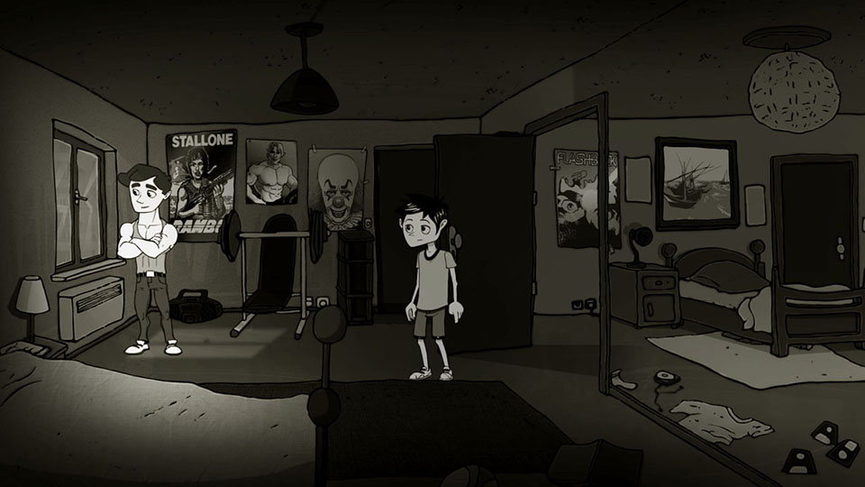
Désiré — 2016 https://www.seccia.com/game#desire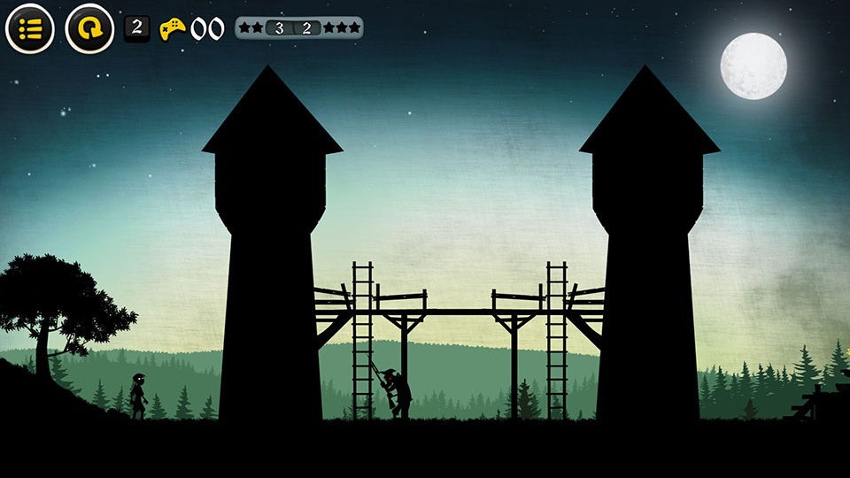
Long Live the King — 2017 https://www.seccia.com/game#viveleroiGAMEPLAY
Before embarking on the creation of your first video game project, it's essential to understand what truly constitutes a game, and even more so, what characterizes a narrative adventure game. Too often, we rush into the visual aspect or the writing of the story without grasping what forms the very backbone of a game: the gameplay. It's the gameplay that defines the rules of the world you create, but also the degree of freedom you give the player. In a narrative adventure game, this structure takes on particular importance, because it doesn't just frame the action: it becomes its language.
What is a video game?
A video game is primarily based on an interactive system centered on gameplay. This term refers to how the player interacts with the game and how the game reacts to their decisions. It's neither pure mechanics nor simple improvisation: it's a balance between structure and expression, between constraint and creativity. It's through gameplay that the player becomes immersed, takes ownership of the virtual world, experiments, and builds their own adventure.
Designing good gameplay requires time, patience, and numerous adjustments. It's not enough to simply imagine appealing features; they must be tested, refined, and balanced. A game can be artistically simple, even rudimentary, and yet captivating if the gameplay works. Conversely, the most beautiful graphics will never save a shallow or flawed gameplay experience.
That said, video games are not just about gameplay. They are also composite art forms, drawing on multiple disciplines: drawing, architecture, music, writing, photography, directing… All these elements enrich the experience, create an atmosphere, and add depth to the game world. But they only serve to flesh out a basic game structure. Without this structure, the work remains inert. The priority, especially at the beginning of a project, must therefore be what makes the interaction come alive: the gameplay.
What is a narrative adventure game?
In a narrative adventure game, gameplay and storytelling are not in competition: they are inseparable. The story is not a backdrop imposed on the mechanics; it is the game's internal logic, its invisible engine. This genre offers a unique form of interaction, where every action is part of an unfolding narrative, every choice resonates within the overall drama.
Contrary to popular belief, gameplay is not secondary. It simply takes a different form. It is not expressed through reflexes or technical challenges, but through observation, dialogue, exploration, and interpretation. The player is not a mere executor: they are an investigator, an active witness, a silent narrator who gradually assembles the pieces of a narrative puzzle.
This type of game therefore demands particular attention to narrative design. If the story is weak, poorly paced, or disconnected from player interaction, the whole thing collapses. The strength of the genre lies in the coherence between narration, presentation, and gameplay. Each element must reinforce the others. In a good narrative adventure game, you don't play alongside the story; you play within the story.
It is this osmosis that gives the genre its richness. More than just entertainment, it becomes a space for interactive expression, an emotional laboratory where the player participates in the creation of meaning.
The four gameplay profiles
If the gameplay of an adventure game has two components that we have just mentioned, namely narration and puzzles, then we can propose an illustrated model of four profiles through the following diagram:
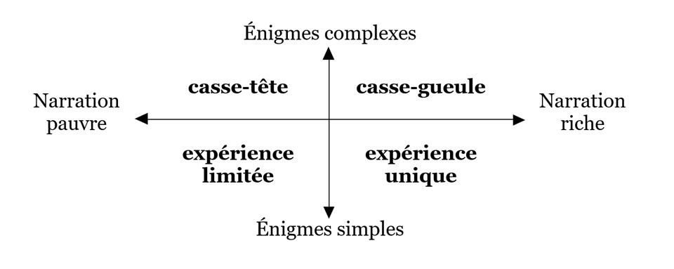
Depending on the level of narrative complexity and the density of puzzles you choose to include in your game, you will obtain one of the following four profiles. Each has its own strengths, risks, and implications for the player experience:
| Weak storytelling combined with overly simple puzzles results in a game lacking depth, emotion, or real challenge. Players are likely to quickly lose interest due to a lack of intellectual or emotional stimulation. This type of minimalist experience might be suitable for a tech demo or prototype, but it cannot support an ambitious narrative project. | |
|---|---|
| In this profile, the narrative is reduced to the bare minimum, while the puzzles are numerous and complex. It's no longer really an adventure game, but rather a puzzle game, or an escape room. However, it can be integrated into a larger work: inserting sequences of pure logic within a story can provide contrast and vary the pace, provided they are used judiciously. | |
| This profile combines rich storytelling with complex puzzles. It's arguably the most perilous to master. It demands a delicate balance: each puzzle must be fully justified by the plot and integrate naturally into the staging. Otherwise, the player risks feeling overwhelmed or losing interest, despite the quality of the writing. This type of setup can be relevant occasionally, at key moments in your adventure—to intensify dramatic tension, for example—but it's not recommended to make it the dominant structure. | |
| In my opinion, this is the ideal profile for a successful narrative adventure game. Careful storytelling, combined with simple yet well-designed puzzles, creates a fluid and engaging experience. Simplicity here doesn't mean easy or banal: it's about offering short, understandable, and well-integrated tasks that, taken together, create a stimulating challenge. The player progresses without frustration, while feeling constantly involved. It's these seemingly innocuous micro-puzzles that will lead them to think, observe, and above all, feel, without ever needing to cheat to advance. |
INTERFACE
seccia.dev offers a page-based interface approach, a method uncommon in application development software. In contrast, the window-based, asset-based model is widespread in IDEs, as it is generally practical and efficient in many situations. But is it suitable for all development environments?
For example, in a programming tool, it's inconceivable not to be able to open multiple source files simultaneously while preserving the history of changes. Conversely, in video editing software, working simultaneously on multiple timelines is often unnecessary, or even counterproductive.
Although seccia.dev is more akin to a programming software than a video editing tool, I chose to draw inspiration from the latter when designing its interface. Why? Because this approach, in my opinion, more accurately reflects the production stages of a seccia.dev project. Ultimately, it simplifies and accelerates the creation of your game.
The interface is divided into two parts: the common area and the page area. The common area includes fixed and ever-present elements: the toolbar at the top and the page navigation at the bottom of the window. These shared areas remain accessible at all times and offer functionalities common to several editors. The page area, on the other hand, is dynamic and dedicated to the different stages of the project. It includes tools for managing the scenario, generating executables, accessing educational resources, and accessing the editors. Among these, the scene editor and the role editor will likely be the ones you use most frequently.
The editors are dedicated to the production of assets, that is to say, the creation and modification of essential elements of the game. This includes: objects (including characters), scenes (levels), game logic (graphic code), dialogues (conversations between characters), inventory items, players (control of the main character), cinematics (video in MP4 format) and effects (internal shaders).
Toolbar
The toolbar, located at the top of the window, provides quick access to common software features shared by editors. It is divided into five groups: PROJECT, PUZZLE, PLAY, SEARCH, and IDE.
These icons remain accessible regardless of the page selected, and some are assigned a keyboard shortcut.
| Save the current project | |
|---|---|
 | Display the project folder in Windows Explorer |
 | Create a new asset (shortcut with the Alt key) |
| Access other menus | |
| Create a new box for the scenario | |
| Crop the view to the selected Puzzle boxes | |
 | Launch the open scene or a specific scene in Live mode |
| Launch the game in Live mode | |
 | Launch the game in Release mode for play_web |
| Enable or disable game rendering in editors | |
| Enable or disable real-time rendering in editors | |
| Access software settings |
Navigation bar
The navigation bar, located at the bottom of the window, allows access to pages and searches within the project.
The pages can also be navigated using a keyboard shortcut.
| Ctrl+Tab | To return to the previously opened page. |
|---|---|
| To access the previous page of the list. | |
| Alt+Right | To go to the next page in the list. |
PROJECT
A seccia.dev project is based on a simple and coherent organization, composed of three main elements:
A central JSON file, which contains all the game data (scenes, objects, scripts, dialogues, etc.)
A binary ASSET file, containing most of the resources (images, sounds, etc.) in an optimized format
External files, placed in specific folders, used for supplementary resources, such as videos or accompanying documents.
This architecture has two major advantages: it simplifies the use of the software for the user, while limiting the risks of corruption or loss of data related to accidental manipulations.
While manually editing JSON or binary files is technically possible, it is strongly discouraged. These files contain unique identifiers that ensure the project's consistency; modifying them carelessly can break these links and cause malfunctions. In other words, you are free to directly edit the files at your own risk, provided you fully understand what you are doing.
Regarding images, seccia.dev exclusively uses the PNG format to store resources in the ASSET file. However, JPEG and BMP formats are also accepted for import: they will be automatically converted to PNG upon integration into the project. Images integrated into a project are automatically processed to optimize the final file size, without compromising visual quality, using the PngQuant library. However, it is important to note that at runtime, all textures are loaded into video memory (VRAM) in an uncompressed format. This ensures consistent display quality but results in higher memory usage.
Project settings
All project parameters are grouped and centralized on the Project page.
| GENERAL | |
|---|---|
| The name of the game, also used to name the files. | |
| The game title. If the field is empty, the title will be the game name. To write in UTF-8, prefix it with @. | |
| Game version in the form of XXX (1.0.0). | |
| Your game package name (com.domain.name) | |
| Developer's name. | |
| Copyright information (Copyright © Year Name) | |
Allows you to define a list of symbols (words separated by spaces) during game generation and to test for the presence of symbols using the code via the symbol function. | |
| GRAPHICS | |
| Only available for mobile devices, this option forces portrait orientation at startup. | |
| Exclusively for desktop platforms, this option forces fullscreen mode when the game starts. In this case, the player will no longer be able to change the resolution in the options. | |
| The game's maximum display dimension is limited to 4096 pixels. This corresponds to the size of the render window, i.e., the area visible on the screen at any given time. However, scenes can have different dimensions, even exceeding this limit. This allows for the creation of large, explorable environments, which will be displayed progressively through automatic scrolling or camera transitions. | |
| When the screen resolution ratio is smaller than your game's resolution ratio, several options are available to compensate for the lost vertical space: | |
| Scroll : The scene height is equal to the screen height and horizontal scrolling is enabled. | |
| Letterbox : Black bars are added to the top and/or bottom. | |
| Crop : The scene is cropped at the top and/or bottom. | |
| When the screen resolution ratio is larger than your game's resolution ratio, several options are available to compensate for the lost horizontal space: | |
| Pillarbox : Black bars are added to the left and/or right. | |
| Crop : The scene is cropped to the left and/or right. | |
| If enabled, Unity will use the FilterMode.Point value. | |
| An effect can be applied to the entire scene. This option is ignored if it is overdefined in the scene editor. | |
| The default size of labels when their value is 0 in the scene editor. If this property is also 0, the system-defined size will be used. | |
| The default color for labels if not specified in the scene editor. | |
| LIGHT | |
| This option optimizes rendering by preprocessing when lighting changes. This pre-rendered image is then stored in a separate texture. The advantage of this method is increasing your game's framerate; the disadvantage is using more graphics resources. If the scene requires constantly changing lighting states, do not enable this option. I recommend using it for static lighting or lighting that changes only occasionally. | |
| This value defines the ambient light of the scene between 0 and 255. If the value is 0, the game screen will be completely black. If the value is 255, the pixels will have their original color. It is not possible to brighten the scene further using this property. | |
| This option applies a blur effect to the light to soften the beam. The higher the value, the greater the impact on performance. | |
| For performance gains, enable this option to reduce the size of textures used for rendering lights. The result will be less detailed and more pixelated. | |
| MENU | |
| This option allows you to customize the interface by specifying the scene that will become the menu's home screen. The jump_menu function will allow navigation from one screen to another within the menu. | |
| An effect can be applied to the native menu. This option does not apply to the custom menu. | |
| The waiting time in seconds. If the value is 0, the player must click or tap the screen to continue. | |
| Display of the Options menu. | |
| Allows you to differentiate between the subtitle language and the audio language. | |
| Displays the menu to change the font size. | |
| Displays the Subtitles menu to change the text scrolling mode and speed. | |
| Allows you to animate menu text with a ripple effect. | |
| Menu color | The color of the menu text. |
| Menu Rate Color | The color of the menu text. Evaluate the game. |
| Menu highlight color | The text color when the player hovers over a menu. |
| Menu value color | The color of the text indicating the option values. |
| The color of the credits text. | |
| The color of the credits text when the line begins with an at symbol (@). | |
| Link that redirects to your web page containing your privacy policy. This link is mandatory if you use online backups. | |
| Link that redirects to your games page. | |
| Customizable button positions. | |
| Customizable menu button size. At 1:1 scale, the size is 96 pixels. | |
| Link that redirects to a web page. | |
| By default, all buttons are visible. To display only the first three buttons, simply type "123". | |
| FONT | |
| The name of the font provided by seccia.dev. It is possible to provide a custom font. | |
| The name of the Asian font used for texture generation. The font must be installed on the computer at the time of generation. If the field is empty or the font could not be loaded, the software will attempt to use a default font. | |
| AUDIO | |
| Allows you to merge the volume of audio sources into a single menu or disable the menu. | |
| Allows you to load all the sounds (WAV files) of your game into memory when the application launches. | |
| Allows you to apply a default dubbing language in case of missing files. If your game is only dubbed in English, you can force the audio for all other subtitled languages. | |
| LANGUAGES | |
| The default language used in the editor. This is usually the native language of the developer or the game. | |
| The default language when the game is first launched. | |
| If this option is enabled, the application will attempt to retrieve the device's language. If this fails, the default language will be used. | |
| Before you can use a language, it is important to activate it to access the fields. When you deactivate a language, the texts are not erased. Use the TEXT/Purge unused languages menu to perform a complete (irreversible) cleanup. | |
| POST-BUILD COMMAND LINES | |
| It is possible to compress all builds at the end of the generation process by enabling this option. |
Configuration settings
You can create build configurations with different parameters depending on the platform and version to be distributed. By default, there are two configurations required for testing within the software: play_windows and play_web. Platforms have their own specific parameters.
| COMMON PARAMETERS | |
|---|---|
| Link that redirects to your games page. If this field is used, the equivalent link in the Menu group is ignored. | |
| Link that redirects to the store page where you can rate the game. | |
| The font size when the application is first launched. If the value is 0, a default value is used. | |
| The size of the cursor in pixels. | |
| The size of the customizable menu buttons. If this field is used, the equivalent link in the Menu group is ignored. | |
| Allows you to include voices, music, and videos. | |
| Command line | It is possible to run a command-line program at the end of the build process. This feature only applies to the Release build. |
| ANDROID-SPECIFIC SETTINGS | |
| Name of the package specific to the configuration. If the field is empty, the package from the Game group is used. | |
| The version of the APK or AAB file as an integer starting with 1. | |
| By default, an APK file is generated. To generate an AAB file for publication on the Google Play store, the option must be enabled. | |
| The Keystore file generated by the Android SDK to sign the APK or AAB file. | |
| The password that was used to generate the file. | |
| The name that was used to generate the file. | |
| The password that was used to generate the file. If both passwords are identical, you must complete both fields. | |
| WEB-SPECIFIC PARAMETERS | |
| Allows you to specify the distribution type. Choose Local to test your game within the software. | |
| Link to the Content folder if the assets are accessible from another location. | |
| Allows you to check the validity of the domain name of the site where the application is hosted. If the option is enabled, a list of authorized domains must be provided. | |
| The list of accepted domain names. The application will not launch if the site hosting the game is not authorized. | |
| Width & Height | The resolution of the game within the web page. |
Savegame
Backup-specific settings:
| GENERAL | |
|---|---|
| Allows you to enable or disable manual backup management. | |
| The version of the game save file. If two versions of the game are too different, it is best to increment this value. Older save files will then no longer be compatible, but this will prevent the application from crashing or obtaining unpredictable results. If the value is 0, save files will never be compatible between two versions. | |
| Allows you to launch an automatic save each time a puzzle box is solved. | |
| SERVER | |
| The link to the folder containing the seccia.dev scripts that allow you to manage online backups via your own website. If the field is empty, the online backup menu will be inaccessible. | |
| Name of the game and therefore of the subfolder to create on your server. | |
| CHAPTERS | |
| The save file in .sav format which will allow a game to be loaded using the load_chapter function. |
Credits
The credits roll at the end of the game and are also visible from the main menu or when calling the show_credits function. Each language has its own text.
The text color is defined by the Credits color property. To change the color of an entire line, simply add the @ character at the beginning of the line. This color can be customized via the Credits title color property.
You can add predefined keywords to retrieve certain properties of your project. seccia.dev provides a list of constants accessible from dialogs, text fields, and variables in your scripts for this purpose.
| The current build platform: Windows, web, Android, iOS | |
|---|---|
| The language selected by the player: French, English, German, Spanish, Italian, Simplified Chinese… | |
| The name of the game without spaces or special characters | |
| The game title | |
| The game version | |
| Developer's name | |
| The Copyright field is filled in the properties |
PUZZLE
At the heart of the seccia.dev environment lies the puzzle editor. This central tool allows you to define and structure the narrative flow of the game, without resorting to complex programming systems like state machines.
There's no need to manually code the puzzle validation logic: seccia.dev offers a native, simple, and visual solution. You simply add node boxes and then link them together according to the player's progress. During game runtime, a built-in interpreter automatically handles state transitions. The creator's only responsibility is to notify the player that a box has been validated when the corresponding puzzle has been solved.
It's important to clarify, however, that the puzzle editor is an abstract representation of the game's logic. It's primarily designed to organize the narrative, visualize the overall structure of the project, and lay the groundwork clearly and methodically. It doesn't replace the scripts, but rather complements them.
Scripts can only be integrated into role nodes. To view all available language functions, simply click the Help button at the bottom of the main window. There you will find a complete list of commands and their full documentation.
Nodal box
There are five types of node boxes in seccia.dev: puzzle, sequence, or, start, and end. Each fulfills a specific function within the scenario's logic and has properties that are important to understand. To add a box, you can click the [+] button located in the main toolbar to display the list of available types, or use a keyboard shortcut: P, S, O, and E. As you may have noticed, the key corresponds to the first letter of the type. The start box is an exception: it is unique within a scenario.
Puzzle and sequence type boxes must have a name starting with the character #. This prefix is ??used by the engine to identify the active logical points of the scenario.
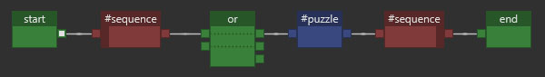
Puzzle and sequence boxes each have two connectors: one input and one output. The start box, however, has only one output connector, while the end box has only one input connector. The or box has a slightly more complex structure with two input connectors and three output connectors. This may seem confusing at first, but don't worry, we'll go into more detail later.
Each input connector can receive multiple connections, and each output connector can also transmit multiple signals to other boxes. This allows for the construction of branching or conditional scenarios while maintaining clear logic.
Before discussing the logic behind connecting the boxes, it's essential to fully understand the specific characteristics of each of the five types mentioned. It's also important to keep in mind that the scenario progresses in a single direction: from left to right. This corresponds to reading from the past to the future, with no possibility of going back in the narrative structure.

The start and end boxes are mandatory in every scenario. They cannot be completely removed: at least one end box must always remain in the project. When a new game is launched from the game menu, the first box executed is naturally the start box. By definition, no box can precede start, nor follow end.
All end boxes lead to the same outcome: they trigger the credits and permanently end the current game. However, it's important to distinguish between the end of a game and data persistence within the overall game. Some values ??can be retained beyond the current session, allowing information to be maintained between multiple games.
This mechanic opens the door to true replayability: you can, for example, save the endings reached by the player, unlock additional content, or influence new playthroughs based on their previous choices. Thus, although each scenario concludes with an end box, the player's overall progression within your universe can be built over the long term.
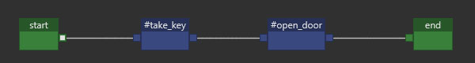
The puzzle-box structure is the most frequently used, as it allows you to define the actions expected of the player to advance the scenario. Think of it as a logical loop in which the game remains blocked until the puzzle is solved. As long as the success condition is not met, the scenario cannot progress beyond this box.
The validation of a puzzle box can only be done by the game logic editor via the success action.
The puzzle box, recognizable by its blue color, thus represents a crucial conditional step in the construction of an interactive scenario. It is what makes the player active, by posing a specific expectation to be met before continuing the adventure.
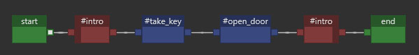
Unlike puzzle boxes, sequence boxes are not blocking. They allow for the automatic chaining of actions or the structuring of the scenario's progression in a fluid way.
Using sequences offers several advantages. They allow for better organization of puzzles, clearly distinguishing their steps and improving the readability of the scenario diagram. This is a good practice for clarifying narrative logic, especially as the project becomes more complex.
Another key advantage of the sequence box is that it automatically defines a logical range around the puzzles it frames. This allows the following functions to be used to query the player's state with respect to this sequence:
| Returns true if the sequence has been started. | |
|---|---|
| Returns true if it has not yet been reached. | |
| Indicates whether the sequence has been fully solved. | |
| Allows you to know if the player is currently within the defined range. |
These functions offer more precise narrative control, particularly useful for triggering conditional events, adapting dialogues, or offering variations based on the player's progress.
if playing #intro// code hereend
It is of course possible to nest ranges defined by sequence boxes, provided that the FIFO (first in, first out) principle is respected. This means that the logical order of entry and exit of the sequences must remain consistent: a sequence started inside another must finish before it can leave the enclosing sequence.
This feature is primarily used to constrain the narrative progression and structure the adventure into clearly defined phases. In theory, the player should not be able to solve a puzzle located outside a beach area until that area is completed. This rule ensures linear or semi-linear progression within a complex scenario.
If this constraint seems too rigid for the type of experience you wish to offer, it probably means that the beach concept is not suited to your narrative needs, and that it would be better to opt for a freer construction, based on independent validations.
Let's take a simple example to illustrate the usefulness of a nested grid: imagine the player falls into an ambush. Until they manage to escape, they are trapped in a closed sequence, limiting their movement and possible actions. This type of situation can be effectively modeled using a sequence enclosing one or more puzzle boxes, ensuring that the player cannot leave this phase until they have completed the required action.

Finally, among the five types of node boxes, the gold box allows the player to be presented with several alternative puzzles, only one of which must be solved to progress. This mechanism introduces a notion of conditional choice, which can produce variations or an impact on the rest of the story.
In this scenario, the player is no longer expected to solve all the puzzles connected to the or box. As soon as one of the puzzles leading to this box is solved, it becomes the selected puzzle, and the others are automatically invalidated. This offers great narrative flexibility for modeling branching paths, sacrifices, or irreversible consequences.
From the editor, it is possible to manually invalidate certain puzzles by marking them as lost. This function is useful for simulating a game state without having to replay everything from the beginning, particularly during testing or adjustments to the scenario's logic.
To use the or box in this configuration, simply connect your puzzles to the first input of the box, then output the signal via the first output. As always with this type of box, the selection condition is set at the input: the first incoming signal determines the outcome. The output is simply the consequence of this choice and introduces no additional conditions.
Keep in mind that the gold box is a valuable tool for structuring non-linear narrative arcs without adding complexity to the graph. Used judiciously, it enhances replayability while simplifying logical construction.
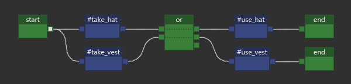
The gold box also allows the narrative to evolve based on the player's choices through the concept of branching storylines. In this mode, it functions as a logic selector, where each input corresponds to a branch of the story and each output reflects that choice.
To implement this, you must use the first two circuits in the box:
The first circuit connects the first input to the first output.
The second circuit connects the second input to the second output.
These two circuits are entirely separate: if a signal enters through one input, it will exit through the output of the same circuit, without passing through the other. The first signal received determines which circuit is selected; all others are ignored or considered lost.
This system is particularly effective for handling two-branch forks, for example a moral choice, an irreversible decision, or a success/failure.
But what about multiple branches, when a scenario requires three or more distinct paths while the gold box only offers two circuits?

It is then sufficient to chain several or boxes together, in cascade, to simulate a system with three or more branches.
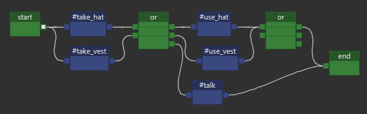
That's not all: you've probably noticed the presence of a third output on the or box. This actually represents a third circuit, but unlike the first two, it has no inputs.
This behavior may seem confusing at first, but it follows a simple rule: regardless of the input used, if a cable is connected to this third output, the signal will always be sent to it, in parallel with the selected main circuit. It is not a backup circuit or a catch-up mechanism (therefore, it is not a catch-all), but rather a mandatory supplementary output once it is connected.
In other words, as soon as one of the inputs is activated, the motor sends the signal to two outputs simultaneously: on the one hand to the output corresponding to the input used, and on the other hand to the third output, if it is connected.
This gives you very precise narrative control while maintaining the readability of the graph. This subtle feature further enhances the versatility of the gold box, especially in scenarios with multiple branching paths and delayed consequences.
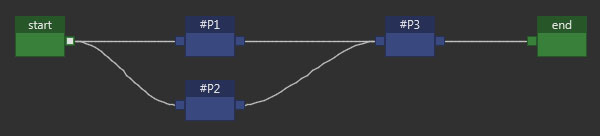
Except for the special case of the or box, when a box receives multiple incoming connections, its behavior changes slightly. Consider the example of a box #P3 connected to two other boxes #P1 and #P2. The signal will arrive in #P3 when the other two puzzles are solved.
To better understand this logic, imagine that the signal coming from #P1 is waiting at the input of #P3 until the signal from #P2 arrives. Only when all the conditions are met can the scenario progress. This rule guarantees perfect synchronization of converging narrative paths, which is essential for sequences dependent on several previous actions.
Best Practices
Given the potentially large number of puzzles in a game, and therefore the significant number of nodes to integrate into the scenario, adopting a structured naming convention is strongly recommended. A simple and effective method is to prefix each node with the chapter number to which it belongs.
For example, a box named #2_open_gate will clearly indicate that it is an action related to chapter 2, which greatly facilitates navigation in the graph and understanding of the narrative progression.
Even if your game only has one chapter, you can still organize the narrative into acts or logical sequences, using a similar system of prefixes. This allows you to segment the development and avoid getting lost in an overly dense linear structure.
This type of organization isn't mandatory, but rather a best practice. It's up to you to decide, based on the nature and complexity of your story, which method best suits your project. The key is to choose a coherent and readable structure that will effectively guide you throughout the production process.
Regarding assets, the chapter number can also be included in the asset names.
S_HOME, P_HERO, I_KEY, C_INTRO, O_DOOR
The first letter, as we saw earlier, is mandatory and defines its type. A short, precise word is sufficient to describe the asset. If you choose to number the chapters:
S1_HOME, P1_HERO, I1_KEY, C1_INTRO, O1_DOOR
There are generally two types of dialogue in an adventure game:
the conversations, structured and often interactive,
contextual replies, shorter, triggered by a specific action or situation.
To better distinguish and organize them, it is recommended to use a clear nomenclature that includes the name of the character involved or the location where the exchange takes place. This allows you to quickly identify what each dialogue relates to.
D_OLDMAN (dialogue related to the old man)
D_HOUSE (house-specific lines or conversations)
D_HERO (monologues or thoughts of the hero)
For roles, which define the interactive entities in the scene (NPCs, manipulable objects, active scenery elements), the software needs to link each role to a scene so that interactions can be edited and synchronized correctly during the game.
Here again, it is advisable to use the name of the associated scene or player to maintain a clear logic:
R_HOUSE
R_GARDEN
R_HERO
This approach will help you maintain consistency in your asset tree, especially in projects with a large number of files. It also helps avoid duplicates or ambiguities during the scripting or debugging phase.
In terms of puzzles, the titles of node boxes, especially puzzle-type ones, play a crucial role in the readability of the scenario and the efficiency of debugging. A well-structured name allows for quick navigation within complex graphs, the retrieval of a specific action in the blink of an eye, and ensures smoother long-term project maintenance.
I recommend using the following syntax to name your puzzle-type boxes:
chapter_sequence_label
| Indicates which part of the game the puzzle belongs to. This can be a number. | |
|---|---|
| Refers to a situation or phase of the game, such as intro, evasion, chase, combat, negotiation, etc. This word must be unique within its chapter. | |
| Specifies the context or action of the puzzle. This can refer to an event, an interaction, or a location. |
When the puzzle involves an interaction between several objects, it can be helpful to add a note to the box (comment area) to document this relationship. Use the following syntax for clarity:
I_KEY + O_DOOR or I_WATER + I_BOTTLE = I_FULLBOTTLE
These notes have no impact on execution, but they constitute valuable documentation for you, your collaborators, or anyone who may take over the project.
It is important to consistently implement sequence ranges in your scenario so that you can accurately track the player's progress using associated functions such as started, ended, playing, or unstarted. These functions are even more effective when the scenario structure is well-segmented.
To maintain clear consistency and make the graph easier to read, remember to use the sequence name in each puzzle it contains. This strengthens the project's organization and allows for the logical grouping of actions related to the same narrative moment.
A handy tool accessible via the context menu lets you rename multiple boxes simultaneously after selecting them. This saves you valuable time, especially during the script review or harmonization phase.
Furthermore, you can use the sequence box body (the internal text field) to indicate the emotional mood associated with the current sequence. To do this, it is recommended to first define a list of emotions or moods specific to your game, such as: love, joy, sadness, fear, anger, shame, intrigue…
This purely descriptive annotation is invaluable to artists, and especially to the composer, who can thus better grasp the narrative intent and overall atmosphere of each moment in the game. This type of information strengthens the overall artistic coherence, while also facilitating collaboration between the narrative, sound, and visual departments.
ITEM
In an adventure game, items are central to the gameplay experience. Players collect, examine, combine, and use them to progress through the story. They represent one of the primary forms of interaction in this genre, and their design deserves careful attention. This is where your project's item editor comes in.
An item is a virtual object placed in the player's inventory. It can be a key, a journal, a clue, an ingredient, a broken object, or a mysterious tool. Each item holds a gameplay promise: it triggers an action, a thought process, or an interaction. The item editor allows you to create these objects, configure them, and define their appearance in the game.
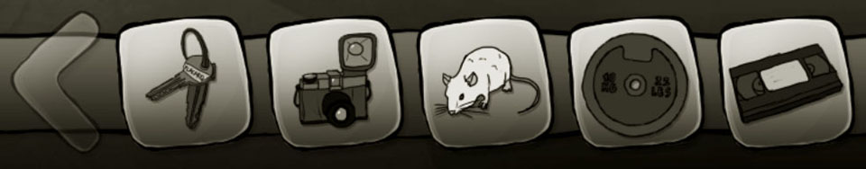
The item editor doesn't just dress up a game; it structures its gameplay. It's through these items that the player tests their hypotheses, tries out combinations, and overcomes obstacles. Each item must therefore be designed in relation to the mechanics you've implemented: where to find it, what it's used for, how it evolves, and when it should be used.
For example :
A rusty key will be able to open a specific door if it has been cleaned with another item.
An old book can reveal important information if the player has read it in the right context.
A precious stone can be placed in a sculpture to trigger a hidden mechanism.
The editor gives you all the flexibility needed to manage these interactions, whether through a system of scripts, conditions or combinations between items.
Icon
Each item can have a maximum of four icons, numbered from 0 to 3. These icons are used to visually represent the object in the user interface, particularly within the inventory bar.
The default icon, essential for displaying the object's purpose, always has the number 0. It must be present if you want the item to appear in the interface.
The following function allows you to dynamically change the icon currently in use:
xxxxxxxxxxset_item_icon I_KEY 1
The optimal icon size is 256×256 pixels, in 32 bits (with alpha channel). To preserve performance, an icon's texture is only loaded into GPU memory if it is actually displayed in the inventory bar.
Title
This is the item's name, as it will appear on screen when the player hovers over it, selects it, or interacts with it. It should be clear, evocative, and sometimes intentionally enigmatic if the gameplay warrants it.
The pipe separator | allows you to define multiple titles for the same item. By default, only the first title in the list will be active, but using the set_item_title function, you can choose another title by specifying its index starting with 0.
State
In an adventure game, a single item can change state as the player progresses. Rather than creating multiple separate items for each variation, the software allows you to assign multiple titles and icons to a single item. This feature offers great flexibility and significantly simplifies inventory management.
An object can thus evolve without losing its identity. For example:
An empty bottle becomes a full bottle after being filled at a fountain.
A closed can becomes an open can after being used with a can opener.
In a more whimsical vein, a crumpled document becomes a readable document after being ironed or slightly moistened.
These changes are not merely visual: they reflect a transformation in the game's logic. The player understands visually and textually that the object's function has changed, which can unlock new interactions or dialogues.
I know what you're thinking: creating a new item for each state might seem tempting, but it unnecessarily burdens the project structure and complicates the management of conditions, interactions, and dialogues. Using the same item with variable states maintains internal consistency while reducing the risk of errors (duplicate items, cluttered inventory, redundant scripts, etc.).
In summary:
The title reflects the role or state of the object at a given moment.
The icon shows its current appearance.
A change in one state often implies an update of both.
Here is an example:
xxxxxxxxxxset_item_icon O_BOTTLE 1set_item_title O_BOTTLE 1
This approach enhances player immersion while providing you with a powerful tool for designing fluid and consistent puzzles.
PLAYER
The player editor is a fundamental tool in the construction of an adventure game. It defines what it means to "be the player" in your interactive world. Specifically, it relies on two major components:
The 3Cs
The inventory of items
The editor's primary role is to configure your Player asset, that is, the set of elements that govern the 3Cs:
| This is the character displayed on screen, which must reference an asset of type Object. This object can also be modified by code. | |
|---|---|
| Refers to the interactions between the player and the character, primarily managed by the engine. | |
| The camera is associated with the active player. It can be configured from the editor, giving you control over framing, zoom, and behavior during movement. |
These three elements form the basis of the embodiment experience. A balanced configuration of the 3Cs is essential to guarantee an intuitive and immersive experience.
The second role of the player editor is the inventory, that is, the list of objects that the player can collect, examine, combine, or use. This inventory is directly linked to the game mechanics: it is an interactive space where the player's choices materialize.
Each item in the inventory comes from the item editor we saw in the previous chapter, and its use depends on the narrative or logical context you have defined. It is in this interface that you manage what the player possesses to interact with the world around them.
It is entirely possible to design a game with multiple inventories, associating each inventory with a distinct player. You can then dynamically switch players via code or through interactions within the game interface, allowing you to vary perspectives or mechanics depending on the narrative sequences.
Icon
As with items, each player can have a maximum of four icons, numbered from 0 to 3. These icons are used to visually represent the character in the user interface, particularly within the inventory bar.
The default icon, essential for displaying the character's portrait, always has the number 0. It must be present if you want the character's face to appear in the interface.
The following function allows you to dynamically change the icon currently in use:
xxxxxxxxxxset_player_icon P_HERO 1
However, if your game does not offer the option to switch between multiple playable characters, the icons become optional and can be ignored without consequence.
The optimal icon size is 256×256 pixels, in 32 bits (with alpha channel). To preserve performance, an icon's texture is only loaded into GPU memory if it is actually displayed in the inventory bar.
Scrolling & Zoom
seccia.dev offers a set of simple but powerful tools to control camera behavior, directly related to the character's position on the screen.
Automatic horizontal scrolling of the scene can be enabled or disabled at any time. This is done either by checking the Scrolling box in the editor, or via script using the enable_scrolling and disable_scrolling functions.
For smoother gameplay, you can enable a smooth scrolling effect, which applies a gradual deceleration rather than an abrupt stop when the character stops moving. This significantly improves visual comfort, especially in more cinematic scenes.
The camera zoom can also be enabled or disabled dynamically, by checking the Zoom box or via the enable_zoom and disable_zoom functions.
In addition, seccia.dev offers other features to enhance the staging by manipulating camera movements. For example:
| Applies a temporary camera shake (ideal for simulating an impact, earthquake, etc.) | |
|---|---|
| Generates a fluid ripple effect to create an unstable or unreal atmosphere. |
All of these functions are documented in detail on the help page accessible from the software interface.
Integration via code
Managing players in scripting is simple. Since a player represents a playable entity, to assign them a character (object) to control, use the control function. A player can only control one object at a time. The inventory remains associated with the player, regardless of the object being controlled.
xxxxxxxxxxcontrol P_HERO OC_HERO
To indicate which player is currently active, use the switch function. Only one player can be active at a time.
xxxxxxxxxxswitch P_HERO
If the game has multiple playable players (character switching mid-story, alternating co-op, etc.), you must specify the list of players visible in the inventory bar. Note: the active player is never displayed in this list.
xxxxxxxxxxset_player_list P_HERO P_FRIEND
Each player must be linked to a starting scene, even if they are not yet active. This allows the engine to know where to locate each player from the start of the game.
xxxxxxxxxxset_player_scene P_HERO S_HOUSE
OBJECT
The object editor allows you to create objects in the broadest sense of the term and configure them before instantiating them in scenes. The generic term "object" is therefore used to refer to active objects, static objects in the scene, and game characters.
Objects cannot be added directly to the player's inventory; you must use items. If you need to retrieve a key in a scene in the form of an object, you will need the equivalent in the form of an item.
The first column of the interface lists the three default animations STOP, WALK, and TALK, even if they are empty, and just below them the names of your own animations. Each animation has its own parameters.
The second column lists the properties of the object, animations, and sub-objects by category.
The third column is reserved for viewing the selected frame.
The frames of the selected animation are displayed at the bottom of the editor.
Object
In the second column, reserved for properties, you will find the exhaustive list of parameters relating to the object, detailed in the following table:
| ID | |
|---|---|
| You can define up to four tags per object. They allow you to identify objects by something other than their name in order to group them by category. A fifth tag can be modified using the set_asset_tag function. | |
| The title is displayed on the screen when the player interacts with the object. For example, when the mouse cursor hovers over the object's interaction area. If the field is empty, interaction will be limited to selections. The separator pipe | allows you to define multiple titles for the same object. By default, only the first title in the list will be active, but using the set_title function, you can choose another title by specifying its index starting with 0. | |
| The description provides information about the item for the creator. | |
| MOVEMENT | |
| Anchor X/Y | This point, marked with a red cross, is used to manage the scene's depth, that is, the order in which objects are displayed. Because the scene is only two-dimensional, the Y coordinate is interpreted as a Z coordinate: the smaller this value, the farther the object will be from the camera. This point represents the object's base in contact with the ground or a support. For example, for a character, this would be the feet, while for a statue, it would be the base. If the object is placed on a table, another property in the scene defines the object's height relative to the ground. This scenario is only relevant if the character needs to move both behind and in front of the statue. The values ??are in pixels and relative to the original image. You can either enter the values ??or double-click on the preview. Finally, if your object is supposed to change direction, the X position must absolutely be in the center of the image to avoid a transition misalignment. I therefore advise you to center your characters at the spine and adjust as needed by testing. The set_anchor function allows you to change the values ??code-wise. Rotations also rely on this point to define the center. |
| This is the walking speed in pixels per second. Note that these values ??can be overridden in the scene editor if your perspectives differ between two scenes. | |
| When the player clicks on a part of your environment, the character automatically moves to that point, taking the shortest path with the fewest possible changes of direction. If the destination is too close to the character's current position, the movement will be perceived as a quick jump where the walking animation is abruptly interrupted. To avoid this unpleasant graphical effect, simply define the minimum allowed distance in number of cells to trigger movement. This constraint is ignored when the player interacts with an element. | |
| SPEAKING | |
| If your object is capable of speaking, you can customize the color of the dialogue using a list of 16 predefined colors. The RGB value of each color can be modified from the project page if it is not suitable. | |
| Customize the style of the choices for your dialogues. These styles can be configured on the project page. | |
| Customize the style of the dialogue lines. These styles can be configured on the project page. | |
| To display the photograph or avatar of the speaking character, you must select an object from the list and choose the Visual Novel style. The TALK animation plays when the character continues speaking, and the STOP animation plays when the player is prompted to choose a response. The STOP animation is used instead of the TALK animation if the latter is absent. If the STOP animation does not contain any images, no avatar is displayed at the time of the choice. | |
| INTERACTION | |
| This option disables possible interactions with the object. You can change this value in scripts using the enable and disable functions. If your object doesn't have a title, it's best to disable interactions to avoid incomplete sentence structures. | |
| By default, the active area of ??the object is defined by a rectangle, aligned on the X/Y axes and encompassing all the pixels of the current frame. This rectangle can therefore be different in size from the image. By disabling this option, you will obtain greater precision based on pixel detection of your images. Of course, this precision comes at a significant cost for high resolutions and animated objects. I advise you to enable it only when absolutely necessary. | |
| This option allows you to disable possible interactions with sub-objects. You can modify this value from within scripts using the enable_subs and disable_subs functions. If your sub-object does not have a title, it is best to disable interactions. | |
| OPTIMIZATION | |
| seccia.dev generates texture atlases to limit the number of textures the graphics card loads at runtime. A texture atlas is composed of several images separated by two transparent pixels to optimize loading time. Furthermore, the sizes, expressed in pixels, are variable to save graphics memory. It's better to have three textures of 512x512 than a single texture of 1024x1024 to save 262,144 pixels. The maximum size of the texture atlas is adjustable. By default, the value is 2048. If your images are larger than the maximum size, they will be resized, resulting in a loss of quality. |
Animation
Each object in seccia.dev can contain predefined animations as well as custom animations:
Three default animations are reserved for internal engine actions (STOP, WALK and TALK).
You can add as many additional animations as necessary to enrich the visual behavior of the object.
An animation is composed of several directions, each containing its own frames (successive images). This structure allows for the precise definition of an object's appearance and movement according to its orientation in space.
The four primary directions are RIGHT, LEFT, FRONT, and BACK. The four secondary directions are FL (front left), FR (front right), BL (back left), and BR (back right). Secondary directions are useful if you want to move in eight directions. If your object only has one direction, it is recommended to use RIGHT by convention. No direction is mandatory: you are free to define only those that are useful to your game.
Each direction can contain up to 250 frames, indexed from 0 to 249. This gives you great freedom in animation while ensuring controlled performance.
| MANAGEMENT | |
|---|---|
| The LEFT, BL, and FL directions can be determined by the RIGHT, BR, and FR directions by applying a mirror effect if the option is enabled. The primary advantage is to limit the size and number of textures to be generated. | |
| By default, there is no transition when the character changes direction. To add one, you must specify the target animation in this field for each transition. For example, if you want to create a transition from LEFT to RIGHT: you must first create a new TURN_LEFT animation (name of your choice) with RIGHT direction frames where the character will turn from right to left, and then you will choose the LEFT option. In the other direction, it's the same principle by adding LEFT direction frames to the TURN_RIGHT animation (name of your choice). | |
| FRAMES | |
| The number of frames per second. | |
| By default, an event is called at the end of an animation, that is, either at the index of the last frame or at index -1. In some situations, for example for a TAKE animation, triggering the event would be more appropriate at the moment the object is picked up. | |
| Loop count | The animation can be played once or multiple times in a loop. Specify -1 for an infinite loop. For the three main animations, the loop is always infinite. |
| You can create a subloop by defining the initial and final frames. Specify -1 to use the last frame of the animation. | |
| Range loop count | The number of loops in the range defined previously. |
| The profile allows you to change speech characteristics. For more information, refer to the Speech section of this chapter. | |
| OPTIMIZATION | |
| It is very important to group texture atlases according to the use of animations. If you have an animation that only plays once in the game, it is not necessarily needed to keep it permanently in memory. There are different ways to do this depending on the usage. Loaded with object: By default, the animation is loaded with the object when it is present in a scene. This is the default mode without optimization. Loaded only for scene: The animation is loaded into memory only when the specified scene is opened. This is unnecessary if the object is in only one scene. Loaded on the fly: The animation is fully loaded just before it appears on the screen, then unloaded at the end of playback. A slight delay may be noticeable if the animation is large, and even more so if the graphics card is not very powerful. Streaming: The animation is loaded frame by frame, like a video. This mode should be tested on lower-end systems to ensure that the animation's frame rate can be guaranteed for your players. |
Sub-object
Sub-objects are rectangular interactive areas defined within a main object. They allow you to create several independently named, clickable parts within the same object. This is particularly useful when you want to, for example, distinguish different parts of a character's body (such as a hat, a cane, or a bag) without having to create new, separate objects.
A sub-object should not be confused with a rectangular portion. Sub-objects are only used to declare elements that inherit from your object. You must then define the clickable rectangle on all necessary frames. Pixel-level collision detection is also applied to sub-objects.
After creating and selecting a sub-object, new properties are displayed in two new sections: Frame and Sub-object.
Regarding first the identity of the selected sub-object:
| ID | |
|---|---|
| The name of the sub-object. A color will be automatically assigned to it in the editor to differentiate the rectangles. | |
| This is the title of the sub-object. If the field is empty, interaction will be limited to selections. |
Regarding the properties of the selected frame:
| INTERACTION | |
|---|---|
| The coordinates of the rectangle. Another way to define the rectangle is to select the portion of the image by holding down the left mouse button. You can use the popup menu to copy the current coordinates to memory so you can quickly apply them to other frames. |
Words
You must provide three head tilts so that seccia.dev can randomly select frames, applying constraints based on the selected profile. Good to know: the algorithm will never randomly select the same image twice in a row.
The tilts must contain identical facial poses. If your animation has four poses, then you will need twelve frames in total (i.e., 4 poses x 3 tilts) as shown in the example below.

The images are numbered from 0 to 11 from left to right and top to bottom. The first line corresponds to the normal head tilt. The second to a downward tilt, and the third to an upward tilt. Note that the tilts should be barely perceptible for a natural look.
Special Features
The functions accessible from scripts do not allow modification of an object's properties. Unlike other assets, the object is not instantiated when the game starts, as it is primarily a graphical model used to construct entities. Therefore, an object can only exist through one or more instances created within scenes.
When an object is placed in a scene, it becomes a scene object, since its characteristics then depend on the scene's context. It is therefore important to distinguish between the concept of an object (the model) and that of a scene object (the instance), because the same object can give rise to as many scene objects as there are scenes that use it. Thus, changing the title of a scene object will only affect the instance in question.
The functions listed in the Play section of the help page are reserved for the states of the current scene.
Best Practices
It is important to name animations correctly by classifying them by location or action to prepare for game memory optimization and minimize refactoring, which will negatively impact your deadlines.
If an animation is specific to a scene and the object appears in multiple locations, you can choose one of these three optimization modes.
| Only for scene | Advantage : No latency when playing the animation.
Disadvantage : Textures load when the scene opens, even if the animation is not playing. |
| ------------------ | ------------------------------------------------------------ |
| On the fly | Advantage : Fewer textures to load if the animation is not playing.
Disadvantage : Significant latency before the animation plays due to the loading of all the frames. |
| Streaming | Advantage : Fewer textures to load (frame by frame) and very little latency before the animation plays.
Disadvantage : On some low-performance hardware configurations, the animation may slow down and not play at the correct speed, especially if the animation speed is high. |
As a general rule, it is better to stream large and non-recurring animations.
seccia.dev is clever; it can avoid unloading an item if that item is also present in the next scene being loaded. Therefore, if your main character is in every scene, their resources will never be unloaded during the game.
SCENE
The scene editor lets you compose your game's levels by placing objects, configuring interactions, and orchestrating the visual and narrative elements that make up your adventure's world. You'll likely spend most of your development time on it.
One of the great strengths of seccia.dev lies in the simplicity with which you can define the character's movement area (walking range), while associating actions with complex behaviors, without having to write a single line of code. For example, when a player clicks on an object to pick up in the environment, the engine can automatically move the character to the object and then trigger a contextual animation (such as crouching or reaching out). This logical sequence is managed visually using grids and cells, tools that we will detail in a dedicated section.
The scene editor also allows you to design in-game cinematics without leaving your workspace. To do this, you can use timelines and insert shots (shot values) to control the camera, movements, dialogue, and synchronized actions.
Scene
A scene in seccia.dev consists of several visual and interactive elements, organized to create a rich and vibrant environment. It includes:
a main setting,
foreground or background layers,
stills (fixed or decorative elements),
interactive objects,
and clickable areas defining possible interactions.
When you create a new Scene asset, the first step is to replace the default background with an image of your choice. This image must be in PNG format to support transparency.
Right-click the Back icon in the Scene toolbar, then select a file to import. Once imported, the image becomes the main background of your scene and serves as the basis for arranging objects, layers, and interactions. The image dimensions define the scene size and, consequently, the number of grid cells. If the scene size differs from the game's resolution, black bars will be overlaid or horizontal scrolling will be applied, depending on the project settings. The cell size is fixed at 16x16 pixels regardless of the game's resolution.
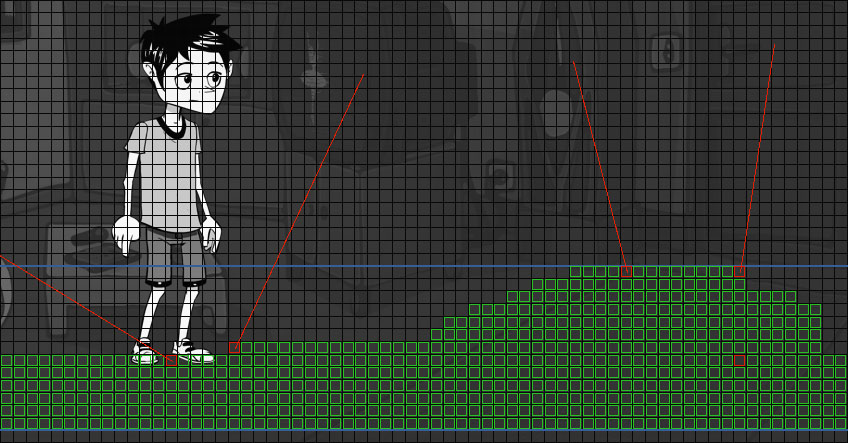
There are two types of layers: backgrounds (FAR) and masks. You can add a maximum of four backgrounds and four masks per scene. The display order of the nine images, including the main background, is as follows, from foreground to background.
| Mask A is displayed in the foreground (closest to the camera). | |
|---|---|
| Mask B is hidden by mask A. | |
| Mask C is hidden by mask B. | |
| The D mask is hidden by the C mask. | |
| The main set, hidden by the masks, defines the size of the stage. | |
| The first distant setting. | |
| The second distant setting. | |
| The third distant setting. | |
| The set furthest from the camera. |
If the main background is completely opaque, distant backgrounds will not be visible. Layers can be enabled or disabled via code by adding crossfade effects.
For performance and graphics compatibility reasons, seccia.dev automatically splits layers when they exceed certain sizes. Images are transformed into textures with dimensions that are powers of two (512, 1024, 2048, etc.), in accordance with modern graphics card standards. This process ensures better memory efficiency and faster data access. This splitting is transparent to the user: the on-screen rendering remains smooth and accurate, regardless of the internal texture splitting.
Scene Properties
When no element is selected, you can access the scene properties in the list located at the top right of the editor.
| SCENE | |
|---|---|
| You can define up to four tags per scene. They allow you to identify scenes by something other than their name in order to group them by category. A fifth tag can be modified using the set_asset_tag function. | |
| An effect can be applied to the entire scene. If the property is empty, the scene will use the Effect field of the project. | |
| LIGHT | |
| Baked lights | Allows you to override the property defined in the project properties. |
| Allows you to override the property defined in the project properties. -1 uses the project value. | |
| Allows you to override the property defined in the project properties. -1 uses the project value. | |
| Allows you to override the property defined in the project properties. | |
| BACKGROUND | |
| Changes the visibility of the scenery in the editor. | |
| Changes the layer's blending mode. | |
| Default : Transparency simulation uses RGB values ??premultiplied by the alpha value. | |
| Addition : Colors are added together to produce the final rendering. Black pixels will become transparent. | |
| Defines the percentage of opacity used to produce a transition effect between two values. | |
| Defines the speed multiplier of the transition. At 100%, the factor is equal to 1. | |
| Intercepts the player's click if the pixel is opaque. | |
| MASK | |
| Changes the visibility of the scenery in the game. | |
| Changes the visibility of the scenery in the editor. | |
| Changes the layer's blending mode. | |
| Default : Transparency simulation uses RGB values ??premultiplied by the alpha value. | |
| Addition : Colors are added together to produce the final rendering. Black pixels will become transparent. | |
| Applies a horizontal and/or vertical repetition of the image to fill the empty space. | |
| Offset X/Y | Shifts the image horizontally and/or vertically in pixels. |
| Changes the horizontal scrolling speed of the scene. At 100% the mask scrolls as fast as the main background, at 50% it scrolls half as fast, at 200% it scrolls twice as fast, and at 0% the speed is adjusted according to the size of the main background and the mask. | |
| This refers to depth parallax. To create an illusion of depth when the character moves away from the camera, it is necessary to increase the magnification of the foreground layers relative to the background. By default, all layers have the same magnification factor. | |
| Defines the percentage of opacity used to produce a transition effect between two values. | |
| Defines the speed multiplier of the transition. At 100%, the factor is equal to 1. | |
| Intercepts the player's click if the pixel is opaque. | |
| FAR BACKGROUND | |
| Changes the visibility of the scenery in the game. | |
| Changes the visibility of the scenery in the editor. | |
| Changes the layer's blending mode. | |
| Default : Transparency simulation uses RGB values ??premultiplied by the alpha value. | |
| Addition : Colors are added together to produce the final rendering. Black pixels will become transparent. | |
| Applies a horizontal and/or vertical repetition of the image to fill the empty space. | |
| Offset X/Y | Shifts the image horizontally and/or vertically in pixels. |
| Changes the horizontal scrolling speed of the scene. At 100% the background scrolls as fast as the main background, at 50% it scrolls half as fast, at 200% it scrolls twice as fast, and at 0% the speed is adjusted according to the size of the main and background scenery. | |
| If this option is enabled, the scenery will retain its size regardless of the zoom applied to the scene. This option is useful for very distant scenery (mountains, sky, horizon, etc.) that should not be altered by the camera's distance. | |
| Defines the percentage of opacity used to produce a transition effect between two values. | |
| Defines the speed multiplier of the transition. At 100%, the factor is equal to 1. | |
| Intercepts the player's click if the pixel is opaque. |
Scene Actions
In the role editor, certain synchronized actions are specific to the scenes we briefly list below:
| ACTIONS | |
|---|---|
| Allows you to perform camera movement. | |
| Allows you to display an object in large format. | |
| Allows you to change scenes. | |
| Allows you to display a popup window. | |
| Allows you to launch a timeline. | |
| Allows you to pause before moving on to the next box. |
Stage Conditions
In the role editor, certain conditions are specific to scenes, which we briefly list below:
| CONDITIONS | |
|---|---|
| Allows you to see the current scene or the previous scene. | |
| Allows you to know the visibility of an element in the scene. |
Events on the scene
In the role editor, some events are specific to the scenes we briefly list below:
| EVENTS | |
|---|---|
| When the player clicks on a point in the scene. | |
| When the player changes location and enters a scene. | |
| When the player changes location and exits the current scene. | |
| When the player performs an action with the mouse or touchscreen. | |
| When the player clicks on a customizable button in the game interface. | |
| A timeline has triggered an event. |
Still
Stills are fixed graphic elements that visually enrich a scene without adding complexity to the management of interactive objects. They play a crucial role in visual composition and depth of field, while also providing an efficient solution for reducing the number of objects to be created in a project.
Unlike interactive objects, stills:
are immobile and non-interactive,
are not shared between scenes (each scene contains its own stills),
do not induce any external dependencies, which facilitates the portability and modularity of scenes.
Like objects, all images are stored in a texture atlas, optimized for performance.
You can insert stills into a scene in two ways:
Via the context menu: right-click in the scene, then choose Add stills to import one or more images.
By drag and drop: if still mode is enabled, you can drag your images directly from Windows Explorer to the scene. This method is fast and particularly well-suited to artistic workflows.
If the imported image has the same dimensions as the main background, it will be automatically cropped and placed in the exact position within the scene. This allows the artist to prepare visual elements in separate layers and then easily export them without having to manually reposition them in the editor.
Once imported, each still can be individually configured according to the needs of the scene.
The properties of still
| PROPERTIES | |
|---|---|
| You can define up to four tags per still. They allow you to group stills by category. A fifth tag can be modified using the set_still_tag function. | |
| The unique, read-only identifier automatically generated upon creation. | |
| The size of the image retrieved from the file. | |
| The name of the still. | |
| The default visibility of the still. The show_still and hide_still functions allow you to change the visibility dynamically via code. This can be used to change the state of elements by layering them (streetlight off or on). | |
| The position in pixels of the still image within the scene. The position corresponds to the top left corner of the rectangle. | |
| Allows you to change the height of the still, just like for objects. The base is always located at the bottom of the rectangle and centered horizontally. This height can be negative. Stills are placed on the same layer as objects drawn after the background. BACK. |
Stage prop
We already developed the concept of a scene object in the previous chapter. To summarize, it is a version specific to the scene that possesses its own particular characteristics.
Scene object properties
| PROPERTIES | |
|---|---|
| The object's reference. | |
| The name of the scene object. | |
| You can define up to four tags per object. They allow you to identify objects by something other than their name in order to group them by category. A fifth tag can be modified using the set_tag function. | |
| The object's visibility when the scene starts. | |
| Allows you to manage relative positions with respect to other objects, labels, or the mouse cursor. You can use it, for example, to create a flashlight effect in a cave. | |
| The object's position in pixels. The position takes into account the pivot point defined in the object editor. | |
| Allows you to change the object's height (position in space, not the object's size). If you have a table and a vase on it in perspective view (and you've set the anchor point to the vase's base and the table leg closest to the camera), you'll have a depth issue. Remember that the Y coordinate of your objects is also used as the Z coordinate to manage scene depth. Since the table and vase don't have the same Y position, and the table is closer to the camera (Y table > Y vase), you'll see the table drawn on top of the vase. To fix this, you could lower the vase's anchor point, but unless you have a good reason, I advise against it. The anchor point should be relative to the object, not the scene, in most cases. The best solution is to compensate for this difference (Y** table and Y** vase) by adding a virtual height to the vase to align both objects on the same plane: i.e., the ground. A vertical line will appear in the editor to indicate this height. The set_elevator function will allow you to modify the height in your scripts. | |
| By default, the size change does not take the Elevator parameter into account. | |
| By default, the rotation ignores the Elevator parameter. | |
| This is the depth parallax expressed as a percentage. To create an illusion of depth when the character moves away from the camera, it is necessary to increase the magnification of foreground objects relative to the background. By default, with a value of 100, all objects have the same magnification factor. If the value is 0, the object will be considered very distant and will never change size. | |
| The angle of the object in degrees. | |
| It is possible to override the object's movement speed. If the field is empty, seccia.dev retrieves the speed specified in the object editor. | |
| If the field is filled in, the object editor's title is ignored. | |
| Allows you to change the display order of an object. By default, objects are drawn immediately after the main background (BACK). The scene depth on the Z axis when objects move depends on the placement. This feature is very useful for adding visual effects with greater flexibility. | |
| Changes the object's blending mode. | |
| Default : Transparency simulation uses RGB values ??premultiplied by the alpha value. | |
| Addition : Colors are added together to produce the final rendering. Black pixels will become transparent. | |
| Soft Light : Similar to Photoshop's soft light. Colors have no effect on black. | |
| If this option is enabled, the object's coordinates will be relative to the camera. | |
| Source : the object can be dragged to another object or label. | |
| Target : the object can receive a drag-and-drop object. | |
| Both : the object can be either the dragged object or the receiving object. | |
| When the player holds down the middle mouse button, an icon defined by the image CHEAT_OBJECT or CHEAT_DOOR is displayed at the object's location. | |
| Doors indicate to the player a change of location or a passage leading to another room. The text color and cursor can be different. | |
| Allows the player to shorten the movement to the object by selecting it a second time. | |
| LIGHT PROPERTIES | |
| Enables or disables the light. | |
| A value between 0 and 255 to change the ambient light of an area. If the scene already has an ambient light of 255, the light will have no effect. The value is added to the scene's ambient light value. If the scene is darkened to 50, and a first light of 20 and a second light of 10 illuminate the same area, that area will receive an ambient value of 70. | |
| The color is applied to the illuminated area with or without transparency. | |
| Angle | Value between 0 and 360. A value of 360 degrees provides omnidirectional lighting. |
| A value between 0 and 359 defines the direction angle. If the light is omnidirectional, the direction is ignored. | |
| The illumination distance in pixels, -1 for infinity. | |
| Value between 0 and 10. The intensity of the light is altered by attenuation as a function of distance. The distance between each pixel and the light's origin point is calculated and converted into a value between 0 and 1. This value is then raised to the power of the attenuation: pow(dist01, attn). If the distance is infinite or if the attenuation is 0, no effect is applied. | |
| EDITOR PROPERTIES | |
| Changes the object's locking status in the editor. When an object is locked, it can no longer be selected via the mouse or shortcuts without going through the Object tab list. | |
| Changes the object's visibility in the editor. |
Scene Object Actions
In the role editor, certain synchronized actions are specific to scene objects, which we briefly list below:
| ACTIONS | |
|---|---|
| Allows you to play the animation of an object. | |
| Allows you to display an object in large format. | |
| Allows you to turn an object's light on or off. | |
| Allows you to start moving an object along a predefined path. | |
| Allows you to reproduce a click on an object or label without player interaction. | |
| Allows you to change the visibility of an object. | |
| Allows you to stop the movement of an object. | |
| Allows you to start moving an object using pathfinding. |
The conditions of the scene object
In the role editor, certain conditions are specific to scene objects, which we briefly list below:
| CONDITIONS | |
|---|---|
| Allows you to know the state of an object's elements. | |
| Allows you to know the visibility of an object. |
Scene Object Events
In the role editor, some events are specific to scene objects, which we briefly list below:
| EVENTS | |
|---|---|
| Allows you to receive a drag-and-drop request and to refuse it if necessary. | |
| Allows you to receive a notification when an object has been dropped. | |
| Allows you to receive a notification when the player clicks on an object in the scene. | |
| Allows you to receive a notification when an item is used with an object. | |
| Allows you to receive a notification when pathfinding of an object is started or stopped. |
Label
A label allows you to either define an interactive rectangular area without adding additional graphic assets to the scene, or to integrate text on the screen.
Label properties
| PROPERTIES | |
|---|---|
| You can define up to four tags per label. They allow you to identify labels by something other than their name in order to group them by category. A fifth tag can be modified using the set_label_tag function. | |
| The label name without special characters. | |
| Allows you to manage relative positions with respect to other objects, labels, or the mouse cursor. | |
| The label's position in pixels. | |
| The dimension of the label in pixels. | |
| Changes the label's visibility. | |
| Allows you to disable interaction with the player. Code-wise, you must use the enable_label and disable_label functions. If your label doesn't have a title, it's best to disable interactions. | |
| The title used to interact with the label. If the title is empty, interactions will be limited to selections. The pipe separator | allows for multiple titles, and the set_label_title function allows selection by index. | |
| The text displayed on the screen inside the frame. | |
| If this option is enabled, the label will be displayed over the objects and its position will be relative to the screen. | |
| Allows you to change the interaction priority. By default, objects have priority; that is, if an object and a label overlap, the player will not be able to access the label by clicking on the object. If this option is enabled, the label becomes the priority. | |
| Text size in pixels, 0 for the default size. | |
| The color of the text. | |
| Text alignment within the frame. By default, the text is centered vertically and horizontally. | |
| Allows the label to receive drag and drop. | |
| When the player holds down the middle mouse button, an icon defined by the image CHEAT_LABEL or CHEAT_DOOR is displayed in the label's location. | |
| Doors indicate to the player a change of location or a passage leading to another room. The text color and cursor can be different. | |
| Allows the player to shorten the movement to the label by selecting it a second time. | |
| EDITOR PROPERTIES | |
| Changes the label lock in the editor. When a label is locked, it can no longer be selected via the mouse or shortcuts without going through the list in the Label tab. | |
| Changes the label's visibility in the editor. |
The label's actions
In the role editor, some synchronized actions are specific to the labels that we briefly list below:
| ACTIONS | |
|---|---|
| Allows you to change the visibility of a label. |
Label conditions
In the role editor, certain conditions are specific to the labels, which we briefly list below:
| CONDITIONS | |
|---|---|
| Allows you to know the visibility of a label. |
Label Events
In the role editor, some events are specific to the labels we briefly list below:
| EVENTS | |
|---|---|
| Allows you to receive a notification when the player clicks on a label. | |
| Allows you to receive a notification when an item is used with a label. |
Shot
Shots (or camera angles) allow you to define the camera's position, so you can apply transitions either through code or via timelines. When a shot is selected, a grid appears to help you compose your image according to the rule of thirds. Holding down the Alt key while selecting a shot will hide all guides except for the selected grid.
The position and width of the shot can be changed manually, while its height adjusts automatically according to the display ratio defined in the project properties.
It is possible to activate a shot or transition between two shots using roles via the shot box, with parameters that customize the effect. However, a more intuitive, flexible, and elegant method is to use timelines, which we will discuss in more detail later in this chapter.
Shot properties
| PROPERTIES | |
|---|---|
| The name of the plan without special characters. | |
| The position of the plane in pixels. | |
| The width of the plane in pixels. | |
| EDITOR PROPERTIES | |
| Changes the shot lock in the editor. When a shot is locked, it can no longer be selected via the mouse or shortcuts without going through the list in the Shot tab. | |
| Changes the visibility of the plan in the editor. |
Shot Actions
In the role editor, certain synchronized actions are specific to the shots we briefly list below:
| ACTIONS | |
|---|---|
| Allows you to initiate a camera transition between two shots or between the current camera position and a shot. |
Wall
Walls allow you to define shadow areas that interact with dynamic lighting. Invisible on screen, they must follow the lines of the scenery to accurately simulate obstructions to light. Their position is fixed and cannot be modified by code.
The properties of the wall
| PROPERTIES | |
|---|---|
| The name of the wall without special characters. | |
| The pixel position of the first point of the segment. | |
| The pixel position of the second point of the segment. | |
| EDITOR PROPERTIES | |
| Changes the wall lock in the editor. When a wall is locked, it can no longer be selected via the mouse or shortcuts without going through the list in the Wall tab. | |
| Changes the wall's visibility in the editor. |
Grid & Cell
The grid allows you to define movement zones as well as possible interactions with scene elements (objects, labels, etc.). Only objects can contain one or more grids, up to a limit of eight per object.
Each grid is composed of customizable cells. To edit a grid, simply double-click on the object in question. In edit mode, you can switch between grids using the numeric keypad (from 0 to 7).
To change the active grid using code, use the set_grid function.
In edit mode, the entire scene is displayed in black and white, with reduced contrast except for the selected object. Lines then appear to visually delimit the cells.

To add an active cell to the grid, hold down the Shift key, then left-click on the desired cell. Similar to using a paintbrush in a drawing program, you can click and hold to fill multiple cells with a single click. You can also select a larger brush size from the toolbar.

To select already defined cells, choose the selection tool that suits you, then simply click on the cells: they will appear in white to indicate that they are active.

Once selected, cells can be deleted using the Del key, or copied/cut to the clipboard with the shortcuts Ctrl+C/Ctrl+X. It is also possible to delete cells by holding down the Ctrl and Shift keys, then clicking with the left mouse button.
Finally, the arrow keys on the keyboard allow you to move the selection. When one or more cells are selected, a list of specific properties appears in the upper right corner of the editor. We will detail these properties later.
Cell properties
| PROPERTIES | |
|---|---|
| The cell's position on the grid in number of rows and columns. | |
| The cell name without special characters. | |
| If this option is enabled, the cell will be able to call the on reach cell event. | |
| Allows you to place the object in the center of the cell at the end of a step. When the cell is linked to an action, this option is automatically enabled. | |
| Allows you to make a cell inaccessible to walkers. This option can be useful when using bridges and you want to customize cells along the character's path. | |
| Assigns a value between 0 and 9 to the cell. With the cur_flag function, you can know at a precise moment if an object is located on a cell bearing one of these numbers. | |
| Speed ??multiplier when the object is on this cell. | |
| Scale multiplier when the object is located on this cell. | |
| Force an animation when the object moves on the cell. | |
| List of valid directions separated by spaces, when the object is on the cell. Useful, for example, to limit the object to one or two directions on a portion of the path. | |
| ON ENTER SCENE | |
| A cell FROM and a cell TO must be defined so that the character can move from cell FROM to cell TO. | |
| Allows you to define a list of scenes. If the previous scene (character's origin) matches a scene in the list, the movement will then be performed. If your scene only has one arrival point, you can ignore this parameter. | |
| Allows you to play an animation at the end of the movement. Only works with TO cells. | |
| Allows you to force the character's direction at the end of the movement. Only works with TO cells. | |
| ON SELECT OBJECT | |
| Linked object | Allows you to link the cell to an object. This way, when the player clicks on the object, the character will automatically move to the cell before the event is triggered. |
| This is the minimum number of cells required to consider the destination reached. If the value is 0, there is no tolerance. If the value is 1, contiguous cells will be allowed. | |
| Allows you to play an animation upon arrival. | |
| Allows you to force the character's direction upon arrival. | |
| ON USE OBJECT | |
| Linked item/object | Allows you to link the cell when an item is used with an object. |
| This is the minimum number of cells required to consider the destination reached. If the value is 0, there is no tolerance. If the value is 1, contiguous cells will be allowed. | |
| Allows you to play an animation upon arrival. | |
| Allows you to force the character's direction upon arrival. | |
| ON SELECT LABEL | |
| Linked label | Allows you to link the cell to a label. This way, when the player clicks on the label, the character will automatically move to the cell before the event is triggered. |
| This is the minimum number of cells required to consider the destination reached. If the value is 0, there is no tolerance. If the value is 1, contiguous cells will be allowed. | |
| Allows you to play an animation upon arrival. | |
| Allows you to force the character's direction upon arrival. | |
| ON USE LABEL | |
| Linked item/label | Allows you to link the cell when an item is used with a label. |
| This is the minimum number of cells required to consider the destination reached. If the value is 0, there is no tolerance. If the value is 1, contiguous cells will be allowed. | |
| Allows you to play an animation upon arrival. | |
| Allows you to force the character's direction upon arrival. |
Cell Actions
In the role editor, some synchronized actions are specific to the cells we briefly list below:
| ACTIONS | |
|---|---|
| Allows you to start moving an object using pathfinding. |
Cell conditions
In the role editor, some conditions are specific to cells, which we briefly list below:
| CONDITIONS | |
|---|---|
| Allows you to determine if the object is located on a cell. |
Cell Events
In the role editor, some events are specific to the cells we briefly list below:
| EVENTS | |
|---|---|
| Allows you to receive a notification when an object reaches a cell. |
Path & Spot
There is another way to move objects by following a predefined path, either curved or straight. Similar to grids, seccia.dev offers eight paths per object, which can be activated using the set_path function. To edit the paths, select the object and then Edit paths from the pop-up menu.
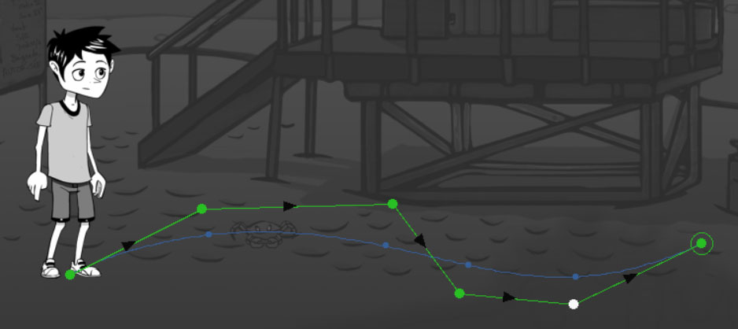
By holding down the Shift key, you can left-click to add spots to your scene and thus draw a linear path. Paths have properties, and like cells, each spot has its own properties.
To select a spot, simply click on its point with the left mouse button. If you click on a spot while holding down the Ctrl key, you will select or deselect the spot depending on its state.
For faster and more convenient selection of multiple elements at once, simply hold down the left mouse button to display a white circle on the screen. All spots touching this circle will be automatically selected. To maintain the current selection, press Ctrl before the circle appears, then release the key. To invert the state of a spot, hold down the Ctrl key while dragging.
Use the arrow keys on the keyboard to move the selected spots one pixel in the desired direction.
Use the PageUp and PageDown keys to move to the previous or next spot. The Home key will place the selection at the beginning and the End key at the end of the path.
It's possible to apply a curve to your path to break the linearity of movement and make it more natural using the Spline property of the path. In this case, the position of the spots in the game will be defined by the position of the points on the curve.
Path properties
| PROPERTIES | |
|---|---|
| This refers to the shape of the curve. The larger the value, the further the curve will deviate from straight lines. The calculation time will also be longer. By default, a value of 0 disables the use of the curve. | |
| The object's movement speed in pixels per second. This is the initial speed, which can be modified by the spotlights. | |
| Allows you to take into account the Zoom values ??entered in the spots. | |
| Loop count | Defines the number of loops to perform. If the value is -1, the path will loop infinitely. The default value of 0 allows the path to be performed only once. |
Spot Properties
| PROPERTIES | |
|---|---|
| The spot's position in the list. | |
| The name of the spot without special characters. | |
| The position of the spot in pixels in the editor. | |
| Allows you to change the object's movement speed. The speed is interpolated between two spots. If the value is 0, the speed of the previous spot is retained. | |
| Allows you to change the camera zoom. The value is interpolated between two spots. If the zoom is 0, the zoom value of the previous spot is retained. This property is ignored if the Zoom of the path is disabled. | |
| If the value is greater than 0, the object will stop at the spot and wait for the specified time in seconds. If the value is -1, the object will stop without continuing its path. The continue_path function will allow the path to resume. |
Spot Actions
In the role editor, some synchronized actions are specific to the spots we briefly list below:
| ACTIONS | |
|---|---|
| Allows you to start moving an object by following a predefined path in the editor. |
Spot conditions
In the role editor, certain conditions are specific to the spots we briefly list below:
| CONDITIONS | |
|---|---|
| Allows you to know if the object is located at a spot. |
Spot Events
In the role editor, some events are specific to the spots we briefly list below:
| EVENTS | |
|---|---|
| Allows you to receive a notification when the object reaches a spot. |
Drag & Drop
Drag and drop plays an important role in creating mini interactive puzzles, allowing you to enrich the narrative of your games with simple and intuitive gameplay mechanics.
The principle is as follows: by clicking and holding the left mouse button on an object, you can drag it to another object or to a label in the scene. The action ends when you release the button over a valid target. On a touchscreen, the functionality is identical: simply drag the object with your finger to another interactive area.
First and foremost, you must define the object's behavior by assigning a value to the Drag property in the scene editor. Three options are available:
| The object can be moved to a target, but cannot receive other objects. When the player decides to move the object, the on drag object event is called to allow or reject the request by returning a value other than 0. It is always allowed implicitly. | |
|---|---|
| The object or label can receive other objects, but cannot be moved. When a source object is dropped onto a target object, the on drop object event is called to confirm the drag-and-drop. | |
| The object can both be moved and used as a target. |
When a drag-and-drop operation fails to reach a target, the on drop object event is also triggered. To achieve this, set the Target property to False.
This configuration allows for the design of various mechanisms, such as:
assembling objects to create a new one,
insert a key into a lock,
combine ingredients,
assigning elements to specific characters or areas.
move a puzzle piece
This system is ideal for introducing natural tactile interactions, enhancing immersion and promoting storytelling through action, without burdening the script logic.
Drag and drop events
In the role editor, some events are specific to drag and drop, which we briefly list below:
| EVENTS | |
|---|---|
| Allows receiving a drag-and-drop request and refusing it if necessary by returning a value other than 0. | |
| Allows you to receive a notification when an object has been dropped. |
Timeline
Timelines have two main uses in seccia.dev: they allow the creation of in-game cutscenes and scripted transitions, orchestrating visual, audio, and scripted elements using shots. This system offers precise control over the staging while maintaining a logic fully integrated into the project structure.
One of the major advantages of timelines is the ability to attach music and add synchronized subtitles, while ensuring perfect alignment with other elements such as animations, camera movements, or script executions. This synchronization guarantees a smooth and immersive narrative, without any breaks in rhythm.
The timeline editor consists of three parts:
The left column allows you to add and manage the different timelines associated with the scene. A single scene can contain as many as necessary, depending on narrative or technical requirements.
The central part offers a detailed view of the timeline itself, in which you place and organize the temporal elements (shots, subtitles, scripts, effects…).
The right side is used for real-time preview, allowing you to immediately test the rendering and write your scripts in a synchronized visual context.
To start a timeline during a game, use a timeline box in the role editor. If you wish to interrupt its execution prematurely, simply use a stop box.
This system allows you to insert narrative or cinematic sequences with the same nodal logic as the rest of the project, while benefiting from careful and precise staging.
Shots
You must first add your shots to the scene and position them precisely, just as you would a label. Each shot corresponds to a camera frame, which you can then use in a timeline to create transitions, staging effects, or cutscenes. Unlike other visual elements, you cannot directly change the frame height of a shot: it is calculated automatically based on two essential parameters:
the width of the shot, which you can adjust,
and the game's resolution ratio, which determines the format visible on the screen.
When you select a shot in the editor, a geometric ruler appears within the frame: this is the rule of thirds, well-known in photography and filmmaking. Without going into the theoretical aspects, this rule recommends positioning the main subject (or a point of interest) on one of the lines or at an intersection of the grid. This enhances visual clarity and improves the composition.
You can insert as many shots as needed into a scene. It's recommended to give them short, descriptive names to make them easier to find later. Think of these shots like rushes in video editing software: you capture them in the game world before arranging them on the timeline.
Transitions
When two shots are placed side-by-side on the timeline, a green bar automatically appears below their join point. This indicates that you can apply a linear transition between the two shots. To do so, simply click on this bar.
Once activated, the transition creates a smooth flow between the two shots: a fluid visual fade that improves the pacing and clarity of your scene. You can adjust the transition's duration by stretching its frame at its edges, just as you would with an editing element.
It's important to note that once the transition is applied, the two shots become visually linked. They can no longer be moved independently until the transition is removed. To do this, right-click on the green bar and select the delete option from the context menu.
This system allows you to manage your sequences with the same flexibility as editing software, while remaining within the integrated environment of seccia.dev. It offers precise control over visual storytelling without the need for code.
Spline Interpolation
Note that it's very easy to independently adjust several camera settings within a timeline, including the X position, Y position, zoom, blur, depth of field, focus, and fade to black. These settings are accessible directly from the editor's left sidebar, where each setting has its own control button.
The first button, symbolized by a chain, allows you to link several parameters in order to animate them together in a synchronized manner.
By default, the interpolation of values ??between two states is based on a linear mode, defined by two endpoints that you can reposition vertically on the y-axis. This creates constant movement, without any change in speed.
To achieve a more natural animation with gradual acceleration and deceleration, you can activate spline interpolation. Simply add intermediate points by left-clicking on the curve at the desired location. Right-clicking allows you to delete a point.
The number of intermediate points is limited to eight, resulting in a maximum of ten points per transition (including both ends). This provides ample room to fine-tune the pacing of an animation without complicating the timeline.
Music and subtitles
To synchronize music to a timeline, there's no need for scripts. Simply add an OGG audio file to the Songs tab of your project. Once the file is in place, you can select it directly from the dropdown list in the bottom right corner of the timeline, for each language if necessary.
This allows you to associate specific music with a sequence while ensuring perfect synchronization with other temporal elements of the timeline (animations, effects, subtitles, etc.).
Subtitles work on the same principle as in video subtitling software. To insert one, simply place the cursor where you want it on the timeline, then type the text in the designated field. Like shots and transitions, you can stretch their time frame to adjust their display duration.
Note, however, that subtitles cannot be previewed in the editor. They will only appear when the game is running. It is therefore advisable to test the sequences in context to adjust their placement.
A significant advantage over pre-rendered cinematics is that subtitles are embedded within the project's CSV files. This allows them to be fully integrated into the localizable production pipeline, greatly simplifying translation and multilingual adaptation.
Events
Another advantage of timelines is the ability to insert events at any point in the sequence, allowing you to trigger actions in a scripted way: launch an animation, play a sound, modify a variable, validate a puzzle, etc.
To do this, simply click where you want on the timeline—just like for a shot or a subtitle—then enter an event name and value in the text fields below the preview. The event will be intercepted by the on timeline box in the game logic editor.
These events are executed at the precise moment the cursor reaches their position during timeline playback, ensuring perfect synchronization with other visual and audio elements.
This system allows you to centralize the narrative and technical logic of a sequence within a single editing space, without having to scatter the code across different editors. This improves readability, consistency, and production speed.
Scene Manager
The scene manager is accessible from the software's main menu. It is designed to facilitate the duplication and management of elements between scenes, saving you valuable time when creating similar levels or setting up recurring structures.
With this tool, you can:
quickly copy elements from one scene to another,
or conversely, remove specific elements from a selected scene.
The types of elements concerned are stills, objects, labels, shots, walls and timelines.
To duplicate information:
Select the source scene in the left column.
Check the items to copy (for example: objects, shots...).
In the right-hand column, check the target scenes you want to modify.
Click the launch button to perform the copy.
Note:
If an element with the same name already exists in the target scene, it will be overwritten by the version from the source scene.
Exception: stills are never replaced, new elements are automatically created in the target scene.
This system guarantees flexible and secure management, while maintaining consistency between the different scenes of your project.
Best Practices
Here are some practical tips to optimize game performance:
Merge the layers beforehand using your preferred graphics editing software.
Limit the number of effects applied to the scene, especially for mobile devices. You can also use texture adjustments during app generation as an alternative method to find the best compromise between quality and performance.
Limit large static objects by merging them with the background and layers if possible, or use stills to create depth. The more objects there are to display in the scene, the slower the game will become. Remember that stills are grouped into a single texture.
Limit the number of frames in animations or use Streaming mode in the object editor.
Limit the number of lights and activate the Baked lights option if applicable.
DIALOGUE
The dialogue editor allows you to write, organize, and structure the interactive conversations in your game. It's an essential tool in a narrative adventure game, where progression relies as much on verbal interactions as on the player's actions.
In practice, you will often need to work simultaneously on the scene, role, and dialogue editors to manage the changes in state triggered by certain lines of dialogue or player choices. This coordination is essential to ensure a coherent and responsive narrative.
That said, using this editor is not mandatory. If your game relies solely on object puzzles without textual narration—as was the case for Vive le Roi—you can absolutely do without it.
For consistency and to avoid state conflicts, the player cannot save their game during a conversation. They must exit the dialogue, usually at a point where a list of choices is presented, to regain access to the save functions.
Finally, the editor includes quick access to the current language, allowing you to translate or proofread texts directly within the interface, without needing to export CSV files. This speeds up the localization process and simplifies multilingual testing.
Dialogue
A dialogue consists of a tree of choices in blue and replies in red.
Dialog Properties
| PROPERTIES | |
|---|---|
| You can define up to four tags per dialogue. They allow you to identify dialogues by something other than their name in order to group them by category. A fifth tag can be modified using the set_asset_tag function. |
Actions of the dialogue
In the role editor, certain synchronized actions are specific to dialogues, which we briefly list below:
| ACTIONS | |
|---|---|
| Ends the current conversation. | |
| Allows you to start a conversation with the option to define the opening and closing sentences. |
The conditions for dialogue
In the role editor, certain conditions are specific to dialogues, which we briefly list below:
| Allows you to see the current dialogue. |
|---|
The events of the dialogue
In the role editor, some events are specific to dialogues, which we briefly list below:
| Allows you to receive a notification when the dialog starts. | |
|---|---|
| Allows you to receive a notification when the dialog ends. |
Red "Choice" Box
The red boxes allow the player to choose from different dialogue options at various points in the conversation. These options are assigned to the current player.
The properties of choices
| CHOICE | |
|---|---|
| Unique identifier of the box used by the functions. | |
| You can define up to four tags per choice. They allow you to group them by category. A fifth tag can be modified using the set_sentence_tag function. | |
| Allows you to change the visibility of the selection when starting a new game. | |
| By default, choices are spoken by the talking object. | |
| By default, choices are removed after selection. | |
| By default, the player can leave a conversation at the point of a choice. By enabling this option, the player will be forced to choose a response before being able to end the conversation at the next choice. | |
| When the box contains several choices separated by a blank line, the option allows you to choose one randomly. Otherwise, all choices are offered to the player. | |
| Allows you to make the boxes indicated by their ID visible after the replica. The link is then represented in the editor by a line when one of the targeted boxes is selected. The IDs are separated by a space. | |
| Allows you to hide the entire branch after the replica. | |
| Allows you to reach another box after the replica. | |
| Allows you to leave the conversation after the reply. | |
| CONTENT | |
| Displays the current icon of an object instead of text. | |
| OBJECT | |
| Allows you to change the direction of the speaking object during the dialogue. | |
| Allows you to orient the speaking object towards another object during the dialogue. | |
| Allows you to retain the new direction after the line of fire. | |
| Allows you to change the animation of the speaking object during the dialogue. | |
| Keep new animation | Keeps the new animation after the line. |
The actions of choices
In the role editor, some synchronized actions are specific to the choices we briefly list below:
| ACTIONS | |
|---|---|
| Allows you to change the visibility of a choice instead of using the show_choice and hide_choice functions. |
The conditions of choice
In the role editor, certain conditions are specific to the choices we briefly list below:
| CONDITIONS | |
|---|---|
| Allows you to know if the choice is visible. |
The events of choices
In the role editor, some events are specific to the choices we briefly list below:
| EVENTS | |
|---|---|
| Allows you to receive a notification when the choice is displayed. The Said property distinguishes the first display. The Sub-choice property is ignored for choices. | |
| Allows you to receive a notification when the choice is unlocked for the first time. |
Blue Box “Sentence”
The blue boxes allow you to give a line to a character present in the scene.
Properties of replicas
| SENTENCE | |
|---|---|
| Unique identifier of the box used by the functions. | |
| You can define up to four tags per reply. They allow you to group them by category. A fifth tag can be modified using the set_sentence_tag function. | |
| Allows the response to be triggered if all root choices are exhausted when the conversation starts. If there are multiple entry points, then only one response will be randomly selected. | |
| Allows you to force the duration of the line for reasons such as synchronization with the audio or for an action. The property is ignored if the value is 0. | |
| When the box contains several quotes separated by a blank line, this option allows you to choose one randomly. Otherwise, the quote is chosen based on the previous choice. | |
| Allows you to make the boxes indicated by their ID visible after the replica. The link is then represented in the editor by a line when one of the targeted boxes is selected. The IDs are separated by a space. | |
| Allows you to hide the entire branch after the replica. | |
| Allows you to reach another box after the replica. | |
| Allows you to leave the conversation after the reply. | |
| OBJECT | |
| The speaking object. VOICE-OVER allows you to display dialogue as a subtitle without needing to add an object to the scene. | |
| Allows you to change the direction of the speaking object during the dialogue. | |
| Allows you to orient the speaking object towards another object during the dialogue. | |
| Allows you to retain the new direction after the line of fire. | |
| Allows you to change the animation of the speaking object during the dialogue. | |
| Keep new animation | Keeps the new animation after the line. |
Conditions for Aftershocks
In the role editor, certain conditions are specific to the choices we briefly list below:
| CONDITIONS | |
|---|---|
| Allows you to know if the line has already been displayed. |
The events of the aftershocks
In the role editor, some events are specific to the choices we briefly list below:
| EVENTS | |
|---|---|
| Allows you to receive a notification when the line is displayed. The Said property distinguishes the first display, and the Sub-choice property compares the index of the paragraph chosen by the player. |
Interface
You can move a box in the scenario editor by selecting it and dragging it to another box, with or without its children. The movement behavior can be modified using the Ctrl and Shift keys to give you precise control over the graph's organization.
Here are the different combinations available when you release the left mouse button:
| The selected branch is positioned before another branch. | |
|---|---|
| The selected branch is nested inside another branch. | |
| The selected box alone (without its children) is positioned before another box. | |
| The selected box alone is moved inside another branch. |
These combinations allow you to precisely rearrange your scenario without having to manually disconnect everything. This is particularly useful for restructuring a sequence, changing the narrative order, or moving entire subsets without losing the logic of the connections.
| ![A black and white symbol AI-generated content may be incorrect.](data:image/png;base64,iVBORw0KGgoAAAANSUhEUgAAAFYAAABWCAAAABwPT4rAAAABGdBTUEAALGOfPtRkwAAAAlwSFlzAAAZ1gAAGdYBGNHK7QAAABl0RVh0U29mdHdhcmUATWljcm9zb2Z0IE9mZmljZX/tNXE AAAOSURBVFjD7dnZTxNBHAdw/rYq3fucXSoKyJH44hUTDTFB8QAEQcIVbMshVCDwQEsBLR4PRiE8AOGBKE8IBGJM hQQiIKTUcWe3xW6BHtvxAdNvsr22+8n0tzPT2TYH/pPkZNn/jl1fWT0xy8FM2CkgyieGK160zn4S+ZNVGdiaLLMfJ V5VTgnhtMgevAeGqjJ2O0ESxkYQdruoWmcPulnRaBjfFgj4h0cDI8PjAZ/XFwjc4i2zm09EKfJ5qYW4fXWkVXb9Di MrCuCBxtJzcTurKYvsUql2pCLz5fmaS89iYpfLaO2sSFTv9yIRH7umqzLRB/cK8LFfS2lUAbIPwi187JcyClWA8EC c7IfLDFJRW/GxvzwOra8rIjcAk7CuNNj9FkbS2spdeg0TsDVpsruVjN7/S6fgiezKK1dff0/PNUEb0bcHO172ezq7 Bgc83Z93ErHBewRS+cfL0VdChbHsCyCIWgT0JkUWjQiiIJAVwQTs9Dl9xpIeuFqMNDc4YkaZO1dCIADGVAGA8QzFN p2AnaH196s8iaLNgQSp10Rnw05CPm3yVeiZ5KyiosQcg9jfzyMqYBmG1bZo2JTZuNjRMU678dnl/MbWlsb6luZIWo 06JWUBRZpz/soK3G2PVkAo2Q6FDvZDR9nQz2oyFjhq6k2pq52HaxU0UoHO7ps708+UWLEodKx3L9xkNREIks7umnd upcYWbserk8WsqqgS/2yYw8i+EQTU6YTe8ByJj33HaarCOd6G4WQm7JbptQkWtZXNQ1+Tk9haG+AEFan6YdjYCQ4t QTh1HmbM/i3Cbi+PKsDlzUOM7LcqBq22mLzoxIiF3Syn0bCSrh6tZGcIDOyAPmAVcN/b7XZ3eDrcXXUChlPWlhuZJ UWOZVmBZbmMBm+0tU4iMjGC6A3AypoiFGRYBMSqEkWbQtlu7GXeWqmk+lFsHlY/XYOZs1QVPIzN8bnYGlsDk8USW4 2N3T5TbLYIZ64I0ZW1Cy+7YSzZwu04WXChoU1fYbajKwRsrPb1HVkTo0sejGxssLDTtsgVhh5sbLCCFI4iyrhYuDP rGerr6RwY6uoa8t3lcLGmYOu35jizbJY9oyxZm5Q9LEqf5a+Pe71jo16vT7sf0TbvuN944Ne20bFxn3/4opw2q4pE shg/kKTHppo02CYbkFNM4p+AzFks5lJlqcofKbMwuLyaYpbirieyfxVlWSN/ABSbJL3kEz4vAAAAElFTkSuQmCC) BRANCH |
BRANCH | ![A black and white symbol AI-generated content may be incorrect.](data:image/png;base64,iVBORw0KGgoAAAANSUhEUgAAAFYAAABWCAAAABwPT4rAAAABGdBTUEAALGOfPtRkwAAAAlwSFlzAAAZ1gAAGdYBGNHK7QAAABl0RVh0U29mdHdhcmUATWljcm9zb2Z0IE9mZmljZX/tNXEA AAOPSURBVFjD7dnZTxNBHAdw/jVRu/fO7s4uiAdyJL4oGhMNiUHxAkGQCCLQcrYiygMthWq9HoxCeEDCA1GeEAjEm IoGIlVIwXFnt8VuhR7b8QHTb7K9tvvJ9Lczs9M2D/2T5OXY/45dXljcNfOhbNhxKCm7RiiZtc++lcTdVQXm37XNvp FFTd0jVIdNdvMVNFWNczgomjI3inI4JM0+u9nLS2bDxNZg0D80EhweCgR9Xl8weF60zX69JcnRz8vMJOyrp+2yyxc 5RVWhCHWWnUrYWcPYZOfK9CNVRaws0l32HSF2vpzVz4rMuD8XS+TYJUNVqH704zg59mMMZiytA9yO0So79UM7gClBu RJJ9fZLDKm4rOfan54je11VJGEApWGcG7EYLJ+ttFY49RUnY2gzZcDVn9P+ycbQru/DE2f+wr+8M0Ef0hcedDx56u rofD3h63q8nY0OXKayKN+Zjr0ROxLO9EEh6AH6TqkhmgAQAXRVKwk4cNGYs+aqzxUxzY2HcKHMdljEIoTlVQGg+w8m fSMJOssb7NZHG0edAijZqYrDbHZSy1+SrspOpWVXDiTsGs7/aoyrkOY7Xt1j4tNmEOPAxHQ7zsytFTfdamhpamqO5 Z9YpJQsZ2ppDpxZQuC1WAVC6FolsbkR2smKc1VQsLKxtsKS+bhotVbFYhQa7Ye1M39NipeLIX7175hyvixDIBhu27 lxNjz2xlqiOlfCaqsninSGBIPscANzpgHt7iibHvhR0VRUKX2yjsWzYVctrz3jcVr4AXybHiLU2KAANq8ZhxNhnAl 6CCNo0ypr9U4SwW8QVEAqmEUH2000Or7a4gtjESIT9VsniYSWf3lnJTlIE2EfGgFXhFW+Py9Xp6XR11wMCp+z+oegs KQk8zwOeF7IavLHWOh3RiRHGbiBR1hJwPMsiYFaTGdYSJv/sj+xbK5fWXI/PtZrbSyh7lrmJtuLz91xsj61FqWKLr SHGru0rNleEfVeE2MraRZZdMZds2+0kWXiksdVYYbZVAIKsfvmOronx5ZEgGx8i7ER+9BuGEWJsqIoGO5EUUixaf+ cZ7O/rGhjs7h70XRJIsZYQ67fWOHNsjt2nLF2Xkt0qzpwVKwJe7+iI1+vT74f1zRvwmw/8+jYyGvD5h44qGbOaRKW K+QNJZmy6yYBtPgCVNJP8JyBrZkuEdFmm+kvaLArNL6aZuYTvE7m/inKsmd9U5STBeOtBaAAAAABJRU5ErkJggg==) BOX |
BOX | ![A black and white image of a pair of scissors AI-generated content may be incorrect.](data:image/png;base64,iVBORw0KGgoAAAANSUhEUgAAAFcAAABXCAAAAABUo4awAAAABGdBTUEAALGOfPtRkwAAAAlwSFlzAAAZ1gAAGdYBGNHK7QAAABl0RVh0U29mdHdhcmUATWljcm9zb2Z0IE9mZm ljZX/tNXEAAAdLSURBVFjD7Zj9VxPHGsf7n6mQ3dmZ3dnZlyRAIiRCQPSg9GKsFegVoYL1jYp6Q4sg1Sq1Wk WliuDB+sKtLVpRqKCiVhSwKrcVeVEI2ZvdJSS7CSEeuL/cw5zDOeyTzOfMPPt9vvNMPlL+N+OjJe4Sd4m7xE2 QO9nVeedOZ/fo4nJPNewkLMexYunxhheLxr30KaSQ1SbLVitHW/K23ny3GNzJJh5ZIwaGKWu7Agvn1rOC1Th EbP3y7wVyA01cCKvmIfQvtfmPBEFT/pjc21DHEkAjFgAmRGbTGxOhPtuTmX93NJo7WqWTUI7PV3+4unoXZEQ dzDlb/PNRR75zQYiYkrYo7jNO3bwMyh/NxK+ccnOCTQXzjtfzYL/7JIkV8jJZwJS2mbj9VimI5bdHKGvIZ8U aGBePxIFOtuQQC+/tGx4sd6MVti2jBu6PYnC9JNMo2Gs2Vnt5lsNzYx9VCCjZdWJc23S1C3PtBm4lUbme98ZJ d/KxtuC1j+eg/vWVx4JJ/f3Qcw3hKg3cbwSVm2UusE6RD6bClnwpJvXt1zkW2l7VF3oO1Lg5+/3o/Iq2y+ap V1NVWbC7x2Ngr67naLS5d7Ykp3wApP1kfG8DoqTOX/+XeXK5qj8ZRyeiaycPYfb5sdnArQoAU7tMevgzSy0L mTthnr4LBuOSaK66oVLXMj7t9PNw5ILVQjbdN+s30LRC1ZRImk2AQ7wczX1e62SSU6rfhCPvf+QZ9of30XX8 xxpOffWC+G2/AbFDzYMkRHID5zwQ4W03I9VWjpHYFNPP2kWtcCXac3Mq/HHPaqJuIyVs8v6OTZgSsn+NlGS3m 0IFv8b2yekqesYQbBtvz0jHf8NDNDPaGEqc/2GxPYnNaX0TWXHt6YDeNzqX/06UzYBFwgsNF9SxXyS6XZL0s y81Oe4VOOCoH4skvK4QGOwLzH0OjZXRJOTADK0OVndiSbKyyflt09MnPRTLl/cYAK+9FMj/Oe759q4yjbVZow axXrjrZVDqunXi8pSCe4aa9F9ZByjvcPxzM/gC1iwXZRNWkk8F97LfQXiWyb9unO2vQhCXDSvzcZWB006Mxc jFyuxRdSs+B8b2BlM5BqoAcl2fUubnBjX/vcsBGKT6kIgAWsXjvMoRpYbCK7/oN321oxACV89853FYNze279i awVrolM++2Pe42k7BjddyWVeURZwlkC18oCTM1XZ4p7nx3A1N+x1eiKCEyyYUpbf+4GyCAz9glpyZUD6MazD v6+mCzJW8VQY+XpGU2qEHe4sIFpvnnpRQPzlUSlTuSYtshRu0yF0Hwlm/KQvkPt4igaIR5eiyYMEUqIE2BxS wp29h3PF97mTkueJXXnyKsLMzWGLbRHqlR6bctWMfyH3Se18dvQPqa89ikzK3a0YzcWR/UGuv8hm64N8jjbk WtPHvD+A+aKxNY3l1sJ5j5+o4Fm54FPHxjTxAFaq8gQ007e1LlNtfkW1hJFkfAkNDceVFbVVj1RXlJ/2T+2Va rtRtctiLqMxvE+I+2+4AvNEf2CP6OVkIAC2tWUPoVZenQw5Yl2FhqhKo4xN2TMx2JltbFeWeD3GAs0rB5Kx+ GDHhdydDV/bPx/0GzLbWMsH8jLMJ5Hyzk0KOS7shLxHPc+PLyOFoz/m43OEdSHcymwhpnJWXQ2itjbIJwY5HK O5R3l9dz7OOze2G4n1VLQL2TByufxuUdMO12Ct21j2ffnVsx3qoR/h/nNWlfCKTYsWtRg9rwRAfeTEn9xDS9 i1jqeGXWTsu064yYvbQbOkd5jGd4ftPJONKFmJyO+fgNgItCSIs7Y6stU0qWHQOhkN9e20gOfdwZEW82MOAtN 9icoc/1lYmsTXGrr9K66OEJ5Ee2lOMaX7VxemIUA0Cqd+PxOA2JasnpsQdMeXpaxyjj5psSQfBjqcrInTGDd CmoSjuq1yt78M15j5gt7Ze8sQUfnraQZa5ygbDX39aTFP5A2buAFG1wHjN2DdFanoka7T03x5ModiUA2EdjG 6BwH18ysi9Jwe5kq3VPLtVEwk6EKuvvlVMc8zaC7PPE8ccgN0zZuAe1O4B2VGGvlozC3AtpreMtOeIFr6oY9 YgHubxzE0Dd5d2b8meNtmwB6rXC8Y7l82+afXAJPuGkFkGLgr8IQP3tNrmiM67huWcydGrwnYtzqFa56SR7FP zP9WyTSao28B9oubXisoiZnQVrtAvnExR3GOqZ7cEqezj0+0lkOak+ncG7qB2b5FsJd3alkef3S5ysLoJocx H8c+/yZ4C2zIhzwlAxueDJp29rdDLjRe85y9fvlQiSTyZwbofzn+0tn0CkpanVD2Nrrdeu86RCAMAw0vSTDPJ uB8n0gmMN9eeuhXLH6bqKCm69eWlvISw8Xz9Xxbz7zAybWvyKwvlBo46WRJuqgWCha9uK8qCuap1OAgDIUIQ MuzKjAMPFGVRuMrUy9rPSkv/GfzbsqtvPKAsFncRxxJ3ibvEXeL+v3D/C/rEnPmeEZ5qAAAAElFTkSuQmCC) BRANCH |
BRANCH | ![A black and white image of a pair of scissors AI-generated content may be incorrect.](data:image/png;base64,iVBORw0KGgoAAAANSUhEUgAAAFcAAABXCAAAAABUo4awAAAABGdBTUEAALGOfPtRkwAAAAlwSFlzAAAZ1gA AGdYBGNHK7QAAABl0RVh0U29mdHdhcmUATWljcm9zb2Z0IE9mZmljZX/tNXEAAAdISURBVFjD7Zj9UxNHGM f7n6mQu73du729lyRgIiRCQHRQWoy1Aq0IFaxvtKgNLYJUq9RqFZUqgoP1hdYWLSpUUFErCtgqbUVeFEKuu TtCcpcQ4kB/6bAzzHBPsp/Zfe77fPfZvKP8N+OdRe4id5G7yE2QO9F589atm10jC8s9Ub+DsBzHiiVH658t GPfCB5BCVpssW60cbcndcv31QnAnGnlkjRgYpqzpDMyfW8cKVuMQsfXTf+bJDTRyIayah9C/1KbfEwRN+mN yO6COJYBGLABMiMymNSRCfbI7I+/2SDR3pFInoWyfr+5gVdVOyIg6mHM2++eiDn/jghAxxa1R3CecunkZlD 2Yjl864eYEmwrmHS/mwH7zfhIr5GawgClpNXH7rFIQy2+LUNagz4o1MC4ajgOdaM4mFt7bOzRQ5kbLbJtHD NzvxeB6SYZRsFdsrPbyLAdnxz4oF1Cy69iYtukqF+baDNwKonI9b4yTbuVhbcFrHs5C/fsLjwWTuruh52rCV Ri4XwkqN9NcYDdFPpgKW/KFmNRXX2ZbaHtlb+g5UO3m7Hej8yvaLpqnXk5VZcHuGouBvbyOo9GmnpmSnPQB sPwH43vrFyV1/rq/zZPLVP3JODoRnTt4CLPOjs4EbpQDmNpp0sMfmWpZyNwx8/SdMBiXRHPVDZa4lvDLTz4 NR5qsFrLxrlm/gcZlqqZE0mQCHODlaO7TGieTnFL1Mhx58z3PsN+9ia7j31dz6qsXxK/7DIjtah4kIZIbOO OBCG+9Hqm2MozExph+1iZqhSvRnuuT4Y+7VxF1Gylhk/e3b8SUkPVLpCS73BTK/yW2T05V0tOGYNvQMS0d/ zUP0cxoQyhx/vtF9iQ2u+VlZMW1pQF6z8hs/jteOg0WCS/Un1PHXpHodknSTv+pyfEzgQOOutFIwotygcG+ wOzn0GgpTUIOzNDqYHUnliQrm5zXOjV13EOxfFm3AfDCS4G8n+Keb68rlrM2a9Qg1nO3vQxKXbtWXJqSf8d Qk/5LawHlHYp/bgZfwOqlomzCSvKJ4F72OgjPMnlXjbP9lQji0iFlLq7Sf9KJsRi5WJk9rG7F58DYXm8qx0 AlQK6rk8rc3KDmv3U5AINUHxIRQCt5nFsxrFRTeMUnfaavthdA4Oqe6zwO6+batu1b0lkLnfLhJ3seVtkpuO FKDuuKsojTBLIF95SEudoObzU1nLmmab/dCxGUcOm4ovTU7Z9JcOA7zJJT48rbcQ3mfTVNkLniV0r/u8uSU tv1YE8hwWLT7JMS6icHS4jKPW6RrXC9FrntQDjzV2We3IebJVA4rBxeEiyYfDXQ6oAC9vTOjzu2x52MPJf8 yrMPEHbeDJbYVpFe4ZEpd83oW3If9dxVR0+/+toz2aSMbZrRjB/aG9Ta8zyGzv9xuCHHgjb88xbcew01y1l eHaznyJlajoXrH0R8fC0XUAUqr389TXt7E+X2lWdZGENWh8DQUFxxXlvVaFV52XH/xF6Zlit0mxzyIirj64 S4T7Y5AG/0B/aQfk4WAEBLq1cTeuXFqZAD1qZbmMoE6viYHROzncnWFkW540Mc4KxSMDmr7kdM+M3J0BV9c 3G/AjOttUwwP+1sAjnb5KSQ48IuyEvE89T4MrI52nM2LndoO9KdzCZCGmfmZhNaa6NsQrDjEYq6lTeX1/Gs Y1OboXifV4mAPRWH698KJd1wLfbyHbVPp54f2b4O6hH+vdO6lI9lUKy4xehhzRjiQ89m5R5A2r5lLNX/PGP HpdpVRswanCm9gzym031/RTIuZSImp2MWbgPQkiDCkq7IWtuogkXnQDjU+5kNJOccjKyIZ7sZkPprTO7Qu9r KJLba2PVXan2U8CjSQ7uLMM2vPD8VEapGTOq3wzG4jcnqiSlxh0x5+hLH6KMmmtNAsOPpjAidcgO0cTCK+z xH6/twtbkP2KWtlzwyhR+fdJAlrtKB8NcfF9FUXr+Z209ULTBeM/ZloZoeyRot/Vf7Uyg2ZV9YByObIXAfn TRy78hBrmRrMc9u0USC9sXqq28U0Ryz5tzM8/gRB2B3jxq4+7V7QFaUoa/SzAJciektw23ZooUvbJ8xiPu5 PHPdwN2p3Vuypkw27IHq9YLxzmazL1s8MMm+PmSWgfMCf8DAPam2OaLztmE5p7L1qrBdiXOo1jppJPvU/E82 b5UJ6jJwH6n5taLSiBmdBcv0CydTGPeY6t4lQSrr6FRbMaQ5qe61gTug3VskW3GXtuWRJx2FDlY3IZTxIP7 5N9Gdb1si5DoBSP94wKSzV+V6ufGC9+zFixedKJYkn01j3/bmP1tb3QdLSlMrH0fXWY9c5EmEAYHhJmm4mGf fDRDqBsaaaEzdi+cNkLSVFt768lJsQNp6vf24x/w4j07ZGvzJfbuCwkyXhplogWPiiQ1HmzVWtw0EYCBGCk GFXpO+7pygLwlUm/6z5sKTko+Df5p29YwFlobgLOBa5i9xF7iL3/8L9FwMTnPmSFga+AAAAElFTkSuQmCC) BOX |||||||
| :----------------------------------------------------------: | :----------------------------------------------------------: | :----------------------------------------------------------: | :----------------------------------------------------------: |
| Ctrl+C | Ctrl+Shift+C | Ctrl+X | Ctrl+Shift+X |
BOX |||||||
| :----------------------------------------------------------: | :----------------------------------------------------------: | :----------------------------------------------------------: | :----------------------------------------------------------: |
| Ctrl+C | Ctrl+Shift+C | Ctrl+X | Ctrl+Shift+X |
Copying and pasting dialog boxes to the clipboard works the same way as manually moving them, and can be done via the context menu. When you copy dialog items, they are saved in JSON format, which allows you to:
paste them into any Dialog type asset,
transferring them between projects,
or even share them between different instances of the software opened simultaneously.
It is important to note that during this operation, the unique identifiers will be regenerated. This ensures that no conflicts arise when inserting them into a new environment, but it also means that the direct links to these boxes (by name) may need to be manually recreated if necessary.
Regarding the Mutual show property, it allows choices to be dynamically unlocked based on the progress of the conversation. It's a very simple way to make a choice visible after one or more lines of dialogue have been read.
Here's how to proceed:
Select the choice you want to make visible later.
Click on the icon located at the top right of the replica box which will trigger the appearance of this choice.
Upon clicking, the Visible property of the choice automatically becomes False, and the link is established.
At runtime, the behavior is handled without any lines of code. The choice simply needs to appear on the screen once all linked boxes have been read. This system allows you to:
to build conversations with progressively branching paths,
to conceal certain choices until narrative conditions have been met,
or even encourage a linear reading before opening up new interactive branches.
Style
seccia.dev introduces four formatting templates designed to help you effectively structure and style your dialogue. These templates provide visual clarity, allowing players to better understand the dynamics of the exchanges and writers to better organize narrative intentions.
It is essential to clearly distinguish between two fundamental components of any interactive conversation:
| These lines come from the characters and are used to advance the story. They form the narrative framework and guide the player's emotional perception. | |
|---|---|
| These are options offered to the player that influence gameplay, the direction of the narrative, and even the resolution of puzzles. They give the player the power to act, express themselves, or trigger specific events. |
Each formatting model therefore acts as a visual guide, allowing you to recognize at a glance the type of content displayed on the screen, its function, and sometimes even its tone.
The replicas
seccia.dev offers four visual styles for dialogue lines, each corresponding to a different aesthetic or narrative mood.

Inspired by LucasArts games, the default style displays the dialogue above the speaking character. It is recommended to assign a TALK animation to the character to visually accompany the speech.
To distinguish between the speakers, you can:
Assign a different color to each character.
Limit the colours to two or three to maintain visual consistency.
This style is ready to use.
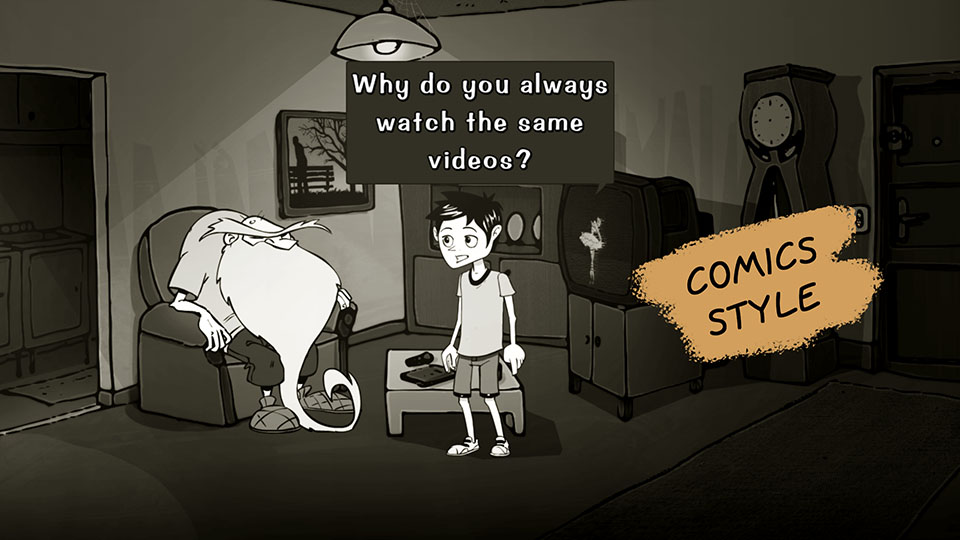
The Comics style is inspired by comic books. Each line of dialogue is contained in a speech bubble. You must provide a DIALOG_COMICS_TALK image (with or without transparency) on the Project page. The software automatically adjusts the bubble size based on the text. Margin coordinates must be specified in the project properties via the Dialog tab interface.
This style reinforces a graphic atmosphere.

The Movie style displays dialogue at the bottom of the screen, like movie subtitles. To activate it, check the Movie style property in the object editor for the relevant character. This style can be combined with another style within the same conversation, depending on the active character.
Ideal for a serious, sober or dramatic tone.

Finally, the Visual Novel style adds an avatar during the conversation. The text's position will depend on your interface, defined in the Dialog tab of the project properties. This style requires creating a new object containing a STOP animation and optionally a TALK animation, so that you can then select this object in the character's Avatar property via the object editor.
The TALK animation plays when the character continues speaking, and the STOP animation plays when the player is prompted to choose a response. The STOP animation is used instead of the TALK animation if the latter is absent. If the STOP animation does not contain any images, no avatar will be displayed.
The choices
For dialogue choices in seccia.dev, two visual styles are available, each corresponding to a specific narrative and game-like approach.
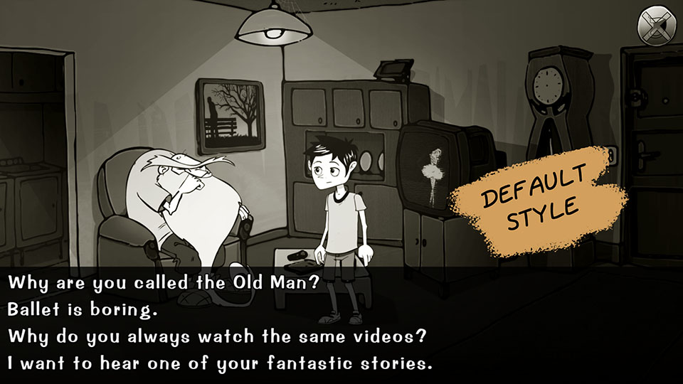
The default style displays choices per line at the bottom of the screen and follows the conventions of traditional point-and-click games. If the sentence is too long, it will scroll horizontally as the mouse cursor hovers over it. This mode is ideal for developing your ideas.
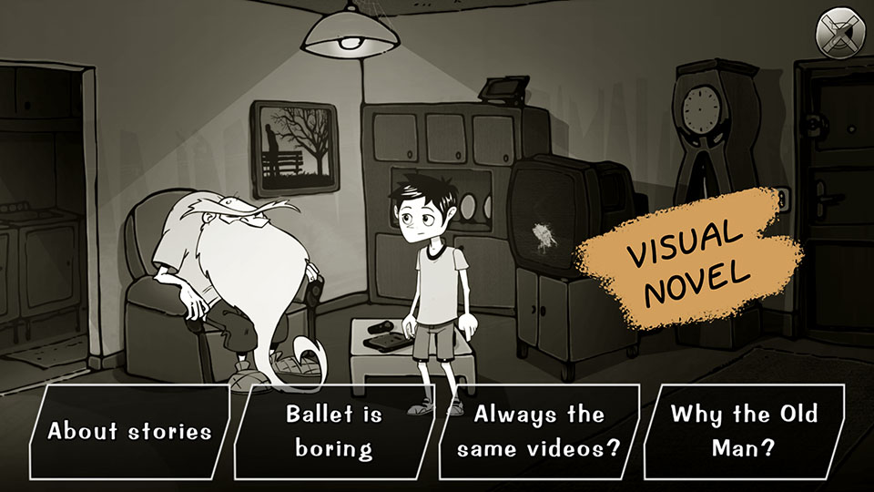
The Visual Novel style presents choices as customizable boxes. This more graphical approach is better suited for offering players short choices, such as brief discussion topics.
This style requires the DIALOG_VN_CHOICE image to display the choice frame.
Bubbles can contain an icon instead of text by specifying the object name in the Icon property of the choice.
Integration via code
To start a conversation, simply add a talk box, specifying the Dialog asset type and optionally the IDs of the start and end replies. Adding a stop box or calling the shutup function will prematurely end the conversation.
xxxxxxxxxxshutup
Three other functions that will be very useful for controlling the visibility of choices.
xxxxxxxxxxshow_choice D_BOB 5hide_choice D_BOB 8if choice D_BOB 8end
The said function allows you to know if a line has already been said, as its name suggests.
xxxxxxxxxxif said D_BOB 8end
If a red box contains several lines of dialogue separated by a blank line and you want to know the player's choice, you can use the variable $_choice in the on say box's script like this:
xxxxxxxxxxif var _choice 0// first choiceelse_if var _choice 1// second choiceend
This variable will be accessible in the on say event of the reply.
GAME LOGIC
The game logic editor allows you to visually program synchronized actions, conditions, and events in your game more intuitively than by writing code. It facilitates the implementation of complex interactions while making the logic more readable.
It is possible, and even recommended, to associate a game logic with a scene to allow direct interaction between their respective editors. This association makes the creation process smoother and more consistent. To do this, simply use the same name for the scene and the game logic.
At runtime, the game logic associated with the scene is automatically launched when it loads, and then stopped when it closes. This automation ensures clear management of contextual behavior without additional intervention from the creator.
Language
The game logic editor offers five distinct types of boxes, each represented by a specific color: system boxes in green, action boxes in red, conditional boxes in blue, event boxes in purple, and finally script boxes in brown.
Each type of box fulfills a specific role in constructing the interactive logic of a scene. This visual distinction allows for the immediate identification of the nature of each action or condition in the graph.
The connections between the boxes operate according to the same principles as in the scenario editor. When a box accepts multiple input connections, it will only execute if all expected signals have been received. This ensures strict synchronization of events before they are triggered.
start
The start box is automatically called when the game logic is launched. It constitutes the logical entry point of the execution.
It is possible to define the order in which the different start boxes within the same game logic are called by modifying the value of the Execution order parameter. The boxes will then be sorted in ascending order of this value, allowing you to prioritize certain initializations or actions.
update
The update box is called once per application frame, or approximately 60 times per second for a game running at 60 fps. This box allows for continuous response to changes in the scene, but you cannot modify its execution frequency.
To create actions spaced out over time, it is recommended to use the on repeat box, which allows you to define intervals based on a duration, or the wait box, which inserts a pause expressed in milliseconds.
As with the start box, it is possible to define the order in which the different update boxes are called using the Execution order parameter. The boxes will be executed in ascending order of this value.
When launching a game logic, the update boxes will always be called after the start boxes.
task
The task box is called by the task function and serves as a link between scripts and game logic. It allows a portion of logic defined in the game logic editor to be executed from a script, thus providing a flexible bridge between the two systems.
You can use them as actual routines, which avoids duplicating code. This approach promotes a clearer and more modular organization of complex behaviors.
gold
The or box allows for a flexible logical condition. If one of its inputs receives multiple connections, a single signal is sufficient to trigger the box's execution. It therefore offers an alternative to the full validation requirement inherent in other types of boxes.
The output of the or box has no special features. It simply transmits the received signal, like a standard output.
random
The random box allows you to randomly select a single signal from among the available output connections. Each time it's activated, one output will be chosen at random to transmit the signal.
schedule
The schedule box allows you to precisely plan the order in which its outputs will be activated. The number of outputs can be modified according to your needs, with a minimum of two outputs required.
You can absolutely connect multiple cables to the same output to combine several actions with a single trigger. It's also not necessary to use all available outputs, which allows for some flexibility in structuring your sequences.
skip
The skip box allows you to skip a frame of the program. It acts like a very brief pause, equivalent to a single frame.
This box is useful when it is necessary to slightly defer the execution of an action, for example to allow time for a change of state to be applied before chaining another operation to the next frame.
restart
The restart box allows you to restart the role by resetting all internal states. It is useful when you want to reset all actions, conditions, and sequences defined in the current role.
end
The end box allows you to stop the role.
script
The script box allows you to execute code and dynamically determine the output to use with the out function. By default, if no output is specified, the first one will be used.
The out function also allows you to specify other outputs if necessary by calling it multiple times, which offers more flexibility in managing logical branches.
The box can return a value other than 0 to maintain its execution from one frame to the next. In this case, no signal is transmitted, and the script is simply restarted in the next frame, allowing for controlled loops within the role.
Actions
In the game logic editor, the execution of an action is synchronized, unlike in scripts. This means that the signal only leaves the box when the action is considered complete. The notion of "action completed" depends on the type of action and its parameters.
An action can have only one input and one output. It has a built-in script that allows you to call other functions through code. This script is executed in three different contexts: when the signal enters the box (enter), when it persists over several frames (execute), and when it exits the box (exit). These three cases are handled within the same script. To distinguish between them, you must use the enter, execute, and exit functions directly in the code.
xxxxxxxxxxif enterendif executeendif exitend
The script is executed only once per frame, regardless of the situation. If all three functions return true simultaneously, it means the signal enters and exits immediately.
It is possible to force the premature exit of a stock by returning a value other than 0. However, if the signal is already expected to exit naturally, this value will have no effect.
xxxxxxxxxxreturn 1
All actions share a common parameter: Lock game. This parameter blocks interactions with the player until the signal is released. It is also possible to use the lock function, which is independent of this parameter and can be combined with other locking mechanisms.
animate
The animate box allows you to play the animation of an object.
| PARAMETERS | |
|---|---|
| The scene where the object to be animated is located. If the field is empty, the object must exist in the current scene. | |
| The object to be animated. | |
| The name of the animation to play. | |
| The name of the direction. If no direction is specified and one already exists for this animation, the current direction will be retained. | |
| Allows you to play the animation in reverse. By default, the value defined in the object editor will be used. | |
| The index of the frame at which the animation should begin. By default, the value defined in the object editor will be used. | |
| The index of the frame to which a notification will be sent. By default, the value defined in the object editor will be used. |
camera
The camera box allows you to move the camera from one position to another without using shots and to apply a zoom to the transition if necessary.
| PARAMETERS | |
|---|---|
| The name of the camera scene. If the field is empty, the indicated elements must exist in the current scene. | |
| The name of the shot refers to the starting position. | |
| The name of the object referring to the starting position. | |
| The name of the object's cell referring to the starting position. | |
| The starting zoom value is between 100 and 400. | |
| The name of the shot refers to the final position. | |
| The name of the object referring to the end position. | |
| The name of the object's cell referring to the end position. | |
| The final zoom value is between 100 and 400. | |
| Allows you to apply a horizontal and/or vertical offset in pixels to the end position, which will be maintained after the transition. | |
| Allows you to include or exclude axes. By default, both axes are included. | |
| Allows you to apply a fade out at the beginning of the transition. | |
| Allows you to apply a fade-in at the end of the transition. | |
| The duration of the transition in milliseconds. | |
| Allows the camera state to be maintained with the end-of-transition values. |
cinematic
The cinematic box allows you to launch a video via a Cinematic asset. The signal leaves the box when the video is stopped.
| PARAMETERS | |
|---|---|
| Name of the Cinematic asset to play. |
examine
The examine box allows you to enlarge an object, giving the player the opportunity to observe an important detail of the game. During observation, the game remains frozen until the player leaves the screen. The signal leaves the box when the player resumes control.
| PARAMETERS | |
|---|---|
| Name of the object to examine. | |
| Name of the animation of the object to loop. | |
| Name of the animation director. | |
| The size of the object as a percentage of the screen size. | |
| The object's opacity as a percentage. A value of 0 makes the object invisible. |
interpolate
The interpolate box allows you to interpolate an integer between a minimum value and a maximum value, and retrieve the result into a variable.
| PARAMETERS | |
|---|---|
| The duration of the interpolation in milliseconds. | |
| The minimum and maximum values ??of the interpolation. | |
| Loop count | The number of loops to perform. |
| Loop pause | The pause in milliseconds between two loops. |
| Allows you to reverse the interpolation at each loop. | |
| Add acceleration at the beginning and/or deceleration at the end. | |
| The name of the variable that will contain the result of the interpolation at each frame. |
jump
The jump box allows you to change scenes by applying a fade-to-black transition. The signal leaves the box when the screen goes black.
| PARAMETERS | |
|---|---|
| The name of the new scene to load. Select BACK to reload the previous scene if it exists (the equivalent of the jump_back function). | |
| Duration in milliseconds of the fade-out transition. | |
| Duration in milliseconds of the pause before the scene change. | |
| Duration in milliseconds of the fade-in transition. |
light
The light box allows you to change the properties of a light attached to an object.
| PARAMETERS | |
|---|---|
| The name of the light scene. If the field is empty, the object must exist in the current scene. | |
| Name of the object where the light is located. | |
| Changes the light's visibility to turn it on or off. | |
| Changes the ambient light value between 0 and 255. This value is added to the current ambient value of the scene. To achieve an effect, it is therefore necessary to reduce the ambient value of either the scene or the game. | |
| Changes the diffuse color of the light to RGBA format. To ignore this field, use the value 0 for the alpha component. | |
| Changes the angle between 0 and 360 degrees. If the angle is 360, the light is omnidirectional. | |
| Changes the direction of the light by specifying an angle between 0 and 359 degrees. | |
| Changes the distance of the light in pixels. If the value is -1, the light illuminates to infinity. | |
| Changes the method of light attenuation. The value is a power between 0 and 10. If the value is 0, no attenuation is applied. If the value is 1, linear attenuation is applied. If the value is 2, squared attenuation is applied. |
path
The path box allows you to start the path of an object.
| PARAMETERS | |
|---|---|
| The name of the object's scene. If the field is empty, the object must exist in the current scene. | |
| The name of the object where the path is located. | |
| The index of the path to start. | |
| The name of the spot where the movement should begin. If the field is empty, the first spot is used. | |
| Loop count | The number of loops to perform. If the field is empty, the value defined in the path properties is used. |
player
The player box allows you to modify the attributes of a player.
| PARAMETERS | |
|---|---|
| The name of the player to modify. | |
| The name of the scene used for the character change (the equivalent of the set_player_scene function). | |
| The name of the object controlled by the player. (the equivalent of the control function). | |
| Allows you to change the current player if the value is true (the equivalent of the switch function). | |
| Removes all items from the inventory (equivalent to the empty function). | |
| Allows you to move all items from the inventory to another player (the equivalent of the transfer function). |
popup
The popup box allows you to display a message on the screen with a choice of responses. Depending on the type of window, several outputs are possible.
| PARAMETERS | |
|---|---|
| The window title. | |
| The message from the window. | |
| By default, the window displays an OK button. It is possible to display two Yes/No buttons by selecting Question. |
logic
The logic box allows you to start a game logic sequence. The signal will be blocked as long as the launched game logic is running.
| PARAMETERS | |
|---|---|
| Name of the game logic to start. |
select
The select box allows you to replicate the click on an object or a label. If both are provided, the object takes precedence.
| PARAMETERS | |
|---|---|
| The name of the player that must correspond to the current player. | |
| The name of the scene that must correspond to the current scene. | |
| The name of the object to select. | |
| The name of the sub-object to select. | |
| Label | The name of the label to select. |
show
The show box allows you to change the visibility of one or more entities. The signal is emitted immediately after the element's state has changed.
| PARAMETERS | |
|---|---|
| Allows you to make the specified entities visible or invisible. | |
| Duration of the state change transition, if applicable. | |
| Allows you to change the scene's brightness between 0 (black) and 100. | |
| The name of the scene for the specified entities. If the field is empty, the entities must exist in the current scene. | |
| The name of the layer whose visibility will be modified. | |
| The name of the still image whose visibility will be modified. | |
| The name of the object whose visibility will be modified. | |
| The name of the light source associated with the object whose visibility will be modified. | |
| The name of the label whose visibility will be modified. | |
| Allows you to change the cursor's visibility. This property does not take into account the Visible property. | |
| Allows you to change the inventory visibility. | |
| Allows you to open or close the game menu. This property does not take into account the Visible property. | |
| Allows you to display the credits or return to the game. This property does not take into account the Visible property. | |
| The name of the dialogue containing the choice to be modified. | |
| The ID of the choice whose visibility will be modified. |
song
The song box allows music to be played on a channel. The signal leaves the box immediately, even during transitions.
| PARAMETERS | |
|---|---|
| The name of the music file without the extension. | |
| The channel index between 0 and 3. The value -1 affects all channels, if applicable. | |
| The music volume is between 0 and 100. | |
| Loop | Single or loop playback. |
| Crossfade | The duration in milliseconds of the transition between the currently playing music and the new music. Both tracks must use the same channel. |
| Allows you to replay the previous song. |
stop
The stop box allows you to stop the indicated entities.
| PARAMETERS | |
|---|---|
| The name of the object to stop (the equivalent of the stop function). | |
| The name of the game logic to interrupt. | |
| Allows you to reset camera movements. | |
| Allows you to interrupt the current conversation. | |
| Allows you to pause the timeline. | |
| Allows you to pause the currently playing cinematic. | |
| Allows you to stop the music currently playing on a channel. If the channel is -1, all music will be paused. |
success
The success box allows you to complete up to four puzzles at a time.
| PARAMETERS | |
|---|---|
| The name of the puzzle to solve. |
take
The take box allows you to retrieve up to four items at a time to place them in an inventory or in the trash.
| PARAMETERS | |
|---|---|
| The name of the player who will receive the item. If this parameter is not specified, the current player will be used. | |
| The name of the item to retrieve. | |
| It is common for retrieving an object to cause it to disappear from the screen. This prevents you from having to add a second box to your graph. | |
| Enables or disables the visual effect. | |
| The name of the item to replace if it is not an addition. | |
| The name of the player animation to play before triggering the action. | |
| The name of the animation department. | |
| The index of the animation frame used to trigger the action. -1 corresponds to the end of the animation. If the parameter is not specified, the object editor's index will be used. |
talk
The talk box allows you to start a new conversation. The signal leaves the box when the conversation ends.
| PARAMETERS | |
|---|---|
| The name of the dialogue to start. | |
| The identifier of the first line of the conversation. | |
| The ID of the line that will end the conversation. The player may leave the conversation before reaching this line. |
timeline
The timeline box allows you to launch a timeline.
| PARAMETERS | |
|---|---|
| The name of the scene in the timeline. If the field is empty, the timeline must exist in the current scene. | |
| The name of the timeline to start. |
wait
The wait box allows you to impose a waiting time in milliseconds before outputting the signal.
| PARAMETERS | |
|---|---|
| The duration of the wait in milliseconds. |
walk
The walk box allows you to move a scene object by calculating a path between its current position and its destination. The signal leaves the box when the object has reached its target.
| PARAMETERS | |
|---|---|
| The name of the object's scene. If the field is empty, the object must exist in the current scene. | |
| The name of the object to move. | |
| The name of the object's cell referring to the initial position. This parameter cannot be combined with the X and Y properties. | |
| The coordinate of the initial position. This parameter cannot be combined with the Cell property. | |
| The name of the object's cell referencing the destination position. This parameter cannot be combined with the X and Y properties. | |
| The coordinate of the position to reach. This parameter cannot be combined with the Cell property. | |
| Forces an animation to play while moving. | |
| Forces a direction during movement. | |
| Moves the object in a straight line from its initial position to the destination, regardless of its speed. | |
| The duration of the straight-line movement in milliseconds. | |
| Allows you to apply acceleration at the beginning and/or deceleration towards the end of straight-line movement. |
Terms
Conditions allow you to enrich your sequences of synchronized actions without using code, while maintaining the clear logic of visual programming. Each conditional box has a single input and multiple outputs corresponding to the different possible outcomes.
When the signal enters the box, the condition is evaluated, and the output corresponding to the result is activated. If this output is not connected, the signal is lost and execution stops, which can be used intentionally to interrupt a sequence.
A condition can also be used as a loop if the Loop box option is enabled. In this case, the box is evaluated every frame as long as the borrowed output does not lead to another box. For example, to express "as long as the condition is false, the sequence remains blocked," simply connect only the output corresponding to the true condition.
boolean is
This condition allows us to compare the variable as a boolean. The result can therefore only be true or false.
| PARAMETERS | |
|---|---|
| The name of the variable to test. |
dialog has
This condition allows you to determine the states of a dialogue. The condition will be true if all the provided parameters match.
| PARAMETERS | |
|---|---|
| The name of the dialogue to test. | |
| The ID of the choice that should be visible. | |
| The ID of the reply that must be displayed at least once. |
dialog is
This condition allows you to know the dialogue and the currently executing response. The condition will be true if all the provided parameters match.
| PARAMETERS | |
|---|---|
| The name of the dialogue. | |
| The reply identifier. |
object has
This condition allows you to determine the states of an object. The condition will be true if all the provided parameters match.
| PARAMETERS | |
|---|---|
| The name of the scene currently running. | |
| The name of the object in the scene. | |
| The name of the animation currently playing. | |
| The animation direction. | |
| The index of the animation frame. | |
| The name of the cell where the object is located. | |
| The flag value of the cell where the object is actually located. This parameter does not take into account the Cell property. | |
| The name of the sticker for the item. | |
| The object's visibility. |
player has
This condition allows you to determine the states of a player. The condition will be true if all the provided parameters match.
| PARAMETERS | |
|---|---|
| The name of the player to test. | |
| The name of the item in the player's inventory. |
player is
This condition allows us to know the current player and the object controlled by the player. The condition will be true if all the provided parameters match.
| PARAMETERS | |
|---|---|
| The player's name. | |
| The name of the object controlled by the current player. This parameter ignores the Player property. |
puzzle is
This condition allows you to know the state of a puzzle and has four outputs:
| The puzzle has been solved by the player. | |
|---|---|
| The puzzle is being solved (the signal has entered the box but has not yet exited). This state considers that the puzzle is not yet solved. | |
| The puzzle is not solved (the signal never came out of the box). This state can be combined with the resolving state. | |
| This is the default setting if the signal could not be output through the other outlets. |
When a or box excludes a puzzle, the latter becomes exclusively an unsolved puzzle.
| PARAMETERS | |
|---|---|
| The name of the puzzle. |
scene has
This condition allows us to determine the states of a scene. The condition will be true if all the provided parameters match.
| PARAMETERS | |
|---|---|
| The name of the scene to test. If this parameter is not specified, the current scene will be used. | |
| The name of the still image in the scene that should be visible. | |
| The name of the object in the scene that should be visible. | |
| Label | The name of the label located in the scene and which must be visible. |
scene is
This condition allows you to know the currently running scene and the previous scene. The condition will be true if all the provided parameters match.
| PARAMETERS | |
|---|---|
| The name of the scene. | |
| The name of the previous scene. |
sequence is
This condition allows us to know the state of a sequence and has six outputs:
| The sequence has started (the signal has already entered the first box of the sequence). | |
|---|---|
| The sequence is still running (the signal is located between the first and second boxes delimiting the sequence). | |
| The sequence has started and ended (the signal has exited the second box of the sequence). | |
| The sequence never started (the signal did not enter the first box of the sequence). | |
| This is the default setting if the signal could not be output through the other outlets. |
| PARAMETERS | |
|---|---|
| The name of the sequence refers to the two red boxes. |
value is
This condition allows you to compare a variable and deflect the signal based on its value. It's essentially a four-way switch with a default.
| PARAMETERS | |
|---|---|
| The value of the first output. | |
| The value of the second output. | |
| The value of the third output. | |
| The value of the fourth output. | |
| The name of the variable to test. |
Events
Events allow you to receive notifications when the player interacts with game elements, such as objects or labels, triggering specific actions. They are a central mechanism for making your game interactive without constantly relying on code.
When an event is triggered, a notification is sent to all mailboxes that reference it in the running roles. The Consume property determines how this signal is propagated:
If Consume is enabled (default value), the first corresponding box intercepts the event and stops its propagation.
If Consume is disabled (False), the event continues to be passed to the other corresponding boxes, allowing multiple reactions to occur for the same event.
For greater control, you can define the execution order of event boxes using the Execution order property. This property is useful when the same event is handled by multiple boxes with different parameters. For example, to specifically detect the combination of item A with item B, but also the more general combination of item A with any other item, you can create two separate boxes of the same type and adjust their execution order. The second, more generic box will only receive the signal if the first one hasn't already processed it.
Finally, be aware that the roles themselves have an overall execution order, which can affect the priority of events when several roles are active in parallel.
Filters
Filters allow you to restrict the execution of an event by selecting the boxes to be called in advance. They act as a sorting mechanism, so that only boxes matching specific criteria are taken into account when the event is triggered.
Not all filters are compatible with all mailboxes, and their availability depends on the type of event. By default, no filter is applied: therefore, all mailboxes that reference the event are candidates for notification.
Adding filters allows for finer interaction logic and increased precision, especially in complex games where multiple objects or scenes may share the same type of event.
| FILTERS | |
|---|---|
| Allows filtering based on the currently playing player. | |
| Allows filtering based on the current scene. | |
| Allows filtering based on the status of a puzzle that needs to be solved. | |
| Allows filtering based on the status of a puzzle that needs to be solved. | |
| Allows filtering based on the status of a puzzle that should be unsolved. | |
| Allows filtering based on the state of a sequence that needs to be started. | |
| Allows filtering based on the state of a sequence that should be playing. | |
| Allows filtering based on the state of a sequence that must be completed. | |
| Allows filtering based on the state of a sequence that has not yet been started. | |
| Allows filtering based on the value of a variable. You must specify the variable name, the condition operator, and the value to compare. |
on click
This event allows you to receive a notification when the player clicks on the game scene. The clickable area is represented by a rectangle. By default, the rectangle corresponds to the size of the scene. Returning a value other than 0 will ignore the click.
| PARAMETERS | |
|---|---|
| Scene name. | |
| The position of the top-left corner of the rectangle in pixels. | |
| The size of the rectangle in pixels. |
on detach item
This event allows you to receive a notification when the player decides to separate two elements of an item in their inventory. To use this feature, you need to add a LAYOUT_DETACH image to the project.
| PARAMETERS | |
|---|---|
| Name of the item currently in the inventory. |
on drag object
This event allows you to receive a notification when the player decides to start a drag-and-drop operation by selecting an object with the Source or Both property. Returning a value other than 0 interrupts the drag-and-drop operation.
| PARAMETERS | |
|---|---|
| The name of the scene. | |
| The name of the source object that initiated the drag and drop. From the box's script, it is accessible via the variable $_obj. | |
| The name of the sub-object within the object. From the box's script, it is accessible via the variable $_sub. |
on drop object
This event allows you to receive a notification when the player drops the item.
| PARAMETERS | |
|---|---|
| The name of the scene. | |
| The name of the source object that initiated the drag-and-drop. From the box's script, it is accessible via the $_obj variable. | |
| If True, the drag-and-drop target is an object or a label. If False, the object was dropped onto a static area, that is, neither onto an object nor a label. | |
| The name of the object that receives the drag and drop. From the box's script, it is accessible via the variable $_obj2. | |
| The name of the sub-object present in the target object. From the box's script, it is accessible via the variable $_sub. | |
| The name of the label that receives the drag-and-drop action. From the box's script, it is accessible via the variable $_label. |
on end song
This event allows you to receive a notification when a song ends before looping.
| PARAMETERS | |
|---|---|
| The name of the song. |
on enter dialog
This event allows you to receive a notification when a conversation starts.
| PARAMETERS | |
|---|---|
| The name of the dialogue. |
On Enter Stage
This event allows you to receive a notification when the player enters a new scene. In the case of a fade to black, the notification is received just before the opening transition when the screen is dark.
| PARAMETERS | |
|---|---|
| The name of the scene. | |
| JUMP : This event is called when the scene changes. | |
| WALK : This event is called when the character reaches the TO cell after entering the scene. | |
| SWITCH : This event is called after a player changes. | |
| LOAD : This event is called when a game save is restored. | |
| WALK : the name of cell TO. |
on exit dialog
This event allows you to receive a notification when the conversation ends.
| PARAMETERS | |
|---|---|
| The name of the dialogue. |
on exit scene
This event allows you to receive a notification when the player leaves the scene. In the case of a fade-out, the notification is received immediately after the transition.
| PARAMETERS | |
|---|---|
| The name of the scene. |
on input
This event allows a notification to be received when the player clicks on the screen.
| PARAMETERS | |
|---|---|
| MAIN : the main button (left click for the mouse). | |
| ALT : the alternative button (right click for the mouse). |
on reach cell
This event is triggered when an object enters or leaves a cell of type Event. Consecutive cells with the same name are considered either a group of cells or a single cell. If the object enters a cell, you can return a value other than 0 to undo the last move and prevent further entry.
| PARAMETERS | |
|---|---|
| The name of the scene. | |
| The name of the object present in the scene. | |
| The name of the cell present in the scene. The default name CELL is ignored. | |
| IN : enters a cell. | |
| OUT : exits a cell. |
on reach spot
This event allows you to receive a notification when an object reaches a spot placed on a path.
| PARAMETERS | |
|---|---|
| The name of the scene. | |
| The name of the object present in the scene. | |
| The name of the spot present in the scene. The default name SPOT is ignored. |
on repeat
This event allows you to receive a notification periodically.
| PARAMETERS | |
|---|---|
| Interval duration in milliseconds. |
on say
This event allows you to receive a notification when the player displays a choice or a line of dialogue.
| PARAMETERS | |
|---|---|
| The name of the dialogue. | |
| The identifier of the choice or reply. | |
| The previous state. | |
| The paragraph index following a choice, only valid for dialogue options. |
on select label
This event allows you to receive a notification when the player clicks on a label.
| PARAMETERS | |
|---|---|
| The name of the scene. | |
| The name of the label present in the scene. | |
| WALK : The event is called when the player clicks the label for the first time to reach it. | |
| SKIP : The event is called when the player clicks the label a second time while the character is moving. This option allows the player to shorten their movement. Remember to modify the label's property. |
on select layout
This event allows you to receive a notification when the player clicks on a customizable button in the interface.
| PARAMETERS | |
|---|---|
| The button's identifier. |
on select object
This event allows you to receive a notification when the player clicks on an object in the scenery or when using the select function.
| PARAMETERS | |
|---|---|
| The name of the scene. | |
| The name of the object present in the scene. | |
| The name of the sub-object within the object. | |
| WALK : This event is triggered when the player clicks on the object for the first time to reach it. | |
| SKIP : This event is triggered when the player clicks on the object a second time while the character is moving. This option allows the player to shorten their movement. Remember to modify the object's properties. | |
| USER : triggered after the player's action. | |
| CALL : triggered after the select box is called. |
on puzzle
This event allows you to receive a notification when a puzzle changes state.
| PARAMETERS | |
|---|---|
| The name of the puzzle. | |
| ENTER : the signal enters the box. | |
| EXIT : the signal exits the box. |
on sequence
This event allows you to receive a notification when a sequence has changed state.
| PARAMETERS | |
|---|---|
| The name of the sequence. | |
| ENTER : the signal passes through the box that defines the beginning of the sequence. | |
| EXIT : the signal passes through the box that defines the end of the sequence. |
on switch player
This event allows you to receive a notification when the player changes the current player.
| PARAMETERS | |
|---|---|
| The name of the new player. | |
| The name of the previous player. |
on timeline
This event allows you to receive a notification when a timeline is triggered and the player clicks on a label.
| PARAMETERS | |
|---|---|
| The name of the scene. | |
| The name of the timeline. | |
| The name of the event. | |
| The value of the event. |
on unlock choice
This event allows you to receive a notification when the player unlocks a hidden choice through the lines defined in the dialogue editor.
| PARAMETERS | |
|---|---|
| The name of the dialogue. | |
| The choice identifier. |
on use item
This event allows you to receive a notification when the player combines two items from their inventory. The order doesn't matter.
| PARAMETERS | |
|---|---|
| The name of the first item in the inventory. | |
| The name of the second item in the inventory. |
on use label
This event allows you to receive a notification when the player uses an inventory item with a label.
| PARAMETERS | |
|---|---|
| The name of the scene. | |
| The name of the item currently in the inventory. | |
| The name of the label present in the scene. |
on use object
This event allows you to receive a notification when the player uses an item with an object.
| PARAMETERS | |
|---|---|
| The name of the item currently in the inventory. | |
| The name of the object present in the scene. | |
| The name of the sub-object within the object. |
on use player
This event allows you to receive a notification when the player uses an item with another player.
| PARAMETERS | |
|---|---|
| The name of the item currently in the inventory. | |
| The player's name. |
on walk
This event allows you to receive a notification when the character starts or finishes their movement.
| PARAMETERS | |
|---|---|
| The name of the scene. | |
| The name of the object present in the scene. | |
| ENTER : to indicate the start of walking. | |
| EXIT : to indicate the end of walking. |
Integration via code
Game logics can be started and stopped by the logic and stop actions.
To communicate with the game logic editor, there is the task function which allows you to send a task. This function works like a routine. First, specify the name of the game logic where the task is located, then the name of the task, and finally the argument, like this:
xxxxxxxxxxtask R_HOUSE name "argument"
To search for a task among all currently running game logics, use the character *.
xxxxxxxxxxtask * name $city
If multiple task boxes exist with the same name, only the first one found will be executed. Using the same task name in different game logics can be advantageous for its genericity, since they are not necessarily all running at the same time.
To retrieve the argument in the task box script, you simply need to use the $_arg variable. By default, the argument is an empty text.
xxxxxxxxxxalert $_arg
To return a boolean value to the task function, you must modify the value of the $_res variable by specifying 1 or true. By default, the task function returns false.
xxxxxxxxxxset _res 1set _res true
Regarding the task box of the role editor, you can choose the output by calling the out function and specifying an index between 0 and 9.
xxxxxxxxxxout 2
By returning a value other than 0, the task box will not send any output signals.
xxxxxxxxxxreturn 1
The role must be running to receive a task, otherwise the task function returns false.
EFFECT
The effects editor allows you to apply visual effects to the screen in real time, taking advantage of the graphics card via shaders. These effects can be assigned at different levels of the project: to an entire scene, to a specific layer in the scene editor, or even to the entire game from the project's global settings.
An effect consists of an ordered list of shaders, allowing multiple effects to be layered. This flexibility enables creative and complex combinations, but should be used sparingly: each added shader increases the processing power of the graphics card.
On mobile platforms, this requirement can lead to noticeable slowdowns. It is therefore strongly recommended to monitor performance regularly by testing your game on a variety of devices, including lower-end models, to ensure a smooth experience for all players.
Output
Some visual elements of the scene are completely independent, such as the main background, the four backgrounds, and the four foreground masks. These elements are simply still images. When you activate an effect on one of these layers, it applies only to that specific image, without affecting the rest of the scene. This allows you, for example, to apply an atmospheric mood only to the background or a blur effect to a foreground mask.
However, for other categories of elements (objects, characters, text, etc.), the behavior differs: the visual effect is applied to the entire screen. It cannot be isolated to a particular layer or component.
The order of an effect's parameters follows the order in which elements are displayed in the scene, ensuring visual consistency in the layering of effects and content. This means that the order in which effects are stacked directly impacts the final rendering.
Regarding the scene, the display order is as follows:
| Layers D, B, C then A. | |
|---|---|
| The main setting. | |
| Objects and labels. | |
| Masks D, C, B, then A. | |
| Interface elements. | |
| The texts (except for the labels). | |
| The mouse cursor. |
It is therefore impossible to apply the effect, for example to masks, without also applying it to objects, the main scenery, or distant scenery.
Brightness, Contrast, Saturation
This effect allows you to control the brightness, contrast, and saturation of the image.
The brightness ranges from -1 to 1. Its default value is 0.
Contrast is a positive value. Its default value is 1.
Saturation is a positive value. When its value is 0, the image is completely desaturated. Its default value is 1.
Beacon
This effect allows a band of light produced by a headlight to be applied.
Blur
This effect allows for the application of a Gaussian blur.
The initial intensity ranges from 0 to 1. Max zoom increases the intensity based on the scene's zoom level to simulate a depth-of-field effect. If the value is 1, only the initial intensity will be used. This technique is best suited for Visual Novels when the background is further away from the characters.
Colorization
This effect allows you to apply two shades to a grayscale image, based on the highlights and shadows. If the image is in color, it is first converted to black and white by the shader.
The Highlight color value is applied to the highlights and the Shadow color value to the shadows. By default, the values ??are set to FFFFFF (RGB), which is the value of white.
The Color smoothless value softens the transition between the two shades. To disable the transition, simply specify the value 0.
Curve
This effect allows you to modify the brightness, saturation, and color of the image using three curves.
Fire
This effect allows for the generation of a realistic flame rendering across the entire surface of the image, with the possibility of adjusting the animation speed.
Grain
This effect allows a dynamic monochrome grain to be applied to the image, taking into account the bokeh effect if needed.
The Gain value allows you to change the size of the grain in the image.
Grayscale
This effect removes color from the image. This shader is faster than the BCS shader if you only want to convert the image to black and white.
Look Up Table
This effect allows you to add a look to your image. Simply choose a style from the list of available filters.
Rain
This effect allows for the generation of a realistic rain rendering across the entire surface of the image, with the possibility of adjusting the intensity and hue of the drops.
Integration by publishers
After specifying which elements the shaders should interact with, you must associate your asset so that it is visible.
For scenes, use the Effect property of the Scene group. The same applies to cinematics.
For the menu, the setting is located in the project properties on the Effect line of the Menu group.
You'll find another Effect line in the Graphics group that allows you to apply an effect to all scenes in the game. Note that this property will be ignored if the Effect field for a scene is already filled in. This allows you to define a global effect for the game and then apply a specific effect to certain scenes. This saves you from having to fill in the Effect field for every scene.
Integration via code
The effect is changed using the set_effect and set_scene_effect functions. The first function changes the game's effect, and the second function changes the effect of a scene. If the parameter is empty, no effect will be used.
xxxxxxxxxxset_effect E_NIGHTset_scene_effect S_GARDEN E_DAYeffect
CINEMATICS
In adventure games, full-screen cinematic sequences—or cutscenes—play a crucial role. They allow players to introduce or develop the story, present characters, establish the atmosphere of a location, or highlight a key moment in the narrative. These information-rich passages are often difficult to integrate directly into gameplay or puzzles without disrupting the flow.
Cutscenes also offer a valuable narrative function: they act as rewards. After a demanding phase of exploration or puzzle-solving, they provide the player with a moment of respite, a narrative break that strengthens their engagement and rekindles their curiosity for the rest of the adventure.
There is an alternative method for designing in-game cutscenes directly within the scene editor, using timelines. These integrated cutscenes allow for a more organic flow between narration and interaction. However, this approach will not be covered here. For more information, please refer to the chapter dedicated to the scene editor.
Video, Audio and Subtitles
A cinematic consists of a video file in MP4 format, an audio file in OGG/MP3 format and a subtitle file in SRT format.
After creating a new Cinematic asset from the main toolbar or the Alt+C shortcut, you can associate a file with each element of a language and thus reuse the same file for different languages. The video may be unique, while the audio files may be specific to each language.
Encoding an MP4 video file
To ensure optimal compatibility across all supported platforms, it is recommended to encode your videos in H.264 Baseline 3.1 format, with a resolution of 1280 x 720 pixels and a framerate of 24 frames per second.
This encoding format ensures a good balance between visual quality, performance, and portability, particularly on mobile devices and web browsers. It minimizes the risk of playback errors or CPU overload, while maintaining a fluidity suitable for narrative use in an adventure game.
Integration via code
To trigger a cinematic in your game, you need to modify a role by adding a Cinematic box. In this box's settings, specify the corresponding video asset in the Cinematic field. Then, link this box to the other elements of the role according to your desired narrative flow. The progression will automatically continue when the video stops: the box will transmit the output signal as soon as playback finishes.
If you want to prevent the player from skipping the video, open the cinematic asset and set the Skip option to None. This ensures the video will play to completion before the game resumes, thus enhancing the narrative impact of the moment.
AUDIO
Audio plays a fundamental role in adventure games, particularly music and voice acting, which help create atmosphere, support emotion, and enhance narrative immersion. Recognizing this importance, seccia.dev provides simple yet essential features for effectively integrating and controlling sound elements.
Whether it is background music, a one-off effect or a voice-over, the tool allows for quick and consistent implementation with the entire project, while respecting the artistic and technical needs specific to each scene or sequence of the game.
Music and soundscape
Music and sound effects must be encoded in OGG format for Windows, and in MP3 for iOS, Android, and WebGL. All these files should be placed in the Songs tab of the project.
The seccia.dev audio engine supports up to four simultaneous tracks, allowing you, for example, to separate background music from ambient sounds (wind, rain, crowds, etc.). This approach offers greater flexibility in dynamically mixing sounds to suit different game situations.
To link two pieces (music or ambient) on the same track, use the song box in the role editor. It allows you to precisely organize the sound sequence while ensuring a smooth transition between files.
Sound Effects
Sound effects are short audio files in WAV format and are located in the Sounds tab of the project. These sounds are played on independent tracks.
xxxxxxxxxxplay_sound "BOOM"
Voice
To facilitate the integration of voices into your game, the editor offers a dedicated interface that allows you to add your own audio files in WAV, OGG or MP3 formats.
You also have the option of recording your voice directly by plugging in a microphone, without needing a third-party application. The recording frequency, expressed in Hertz, is set by default but can be adjusted in the software's Preferences. This setting directly affects the sound quality of your recordings. It is therefore recommended to adapt it according to the type of game you are creating and the target audience. For example, a narrative game focused on immersion or intended for a demanding audience may benefit from a higher frequency, while a lighter or more stylized project may be perfectly fine with standard sound quality.
When importing audio files, the original frequency is retained regardless of the setting in Preferences. Therefore, it is advisable to ensure beforehand that your files are recorded at a frequency consistent with the desired quality for your game and appropriate for your audience.
If your game offers multiple languages, you can of course provide voice acting for each one. When a dialogue box contains several paragraphs separated by a line, it's possible to associate up to four different audio files, one per segment.
Each box has a unique identifier, which you can use to name your files consistently. These identifiers are accessible from the box's properties and are also included in the HTML files generated from the TEXT/Export to HTML menu.
BACKUP
Games developed with seccia.dev can manage up to six save slots, giving players the freedom to resume their progress at any time. However, it's important to distinguish between two types of saves:
Local saves, which are simple to implement and stored directly on the player's device.
Online backups, which are more complex, require a network infrastructure and appropriate server management.
To have the save menu automatically appear in the game, you must enable the Menu property in the project settings, under the Savegame section. This makes saving accessible without using code.
Otherwise, only language functions will allow you to manually manage saves and game loads, integrating these actions into your own interface or game logic.
Local Backup
Slot 0 is dedicated to autosave, triggered by the save function. You decide when this function is called during the game to save the player's progress. Note that there can only be one autosave per project: each new game overwrites the previous save.
To load this save automatically, without going through the game menu, simply use the load function.
Slots 1 through 4 are reserved for manual saves. If the standard menu is disabled or you have created a custom menu, you can still use these slots with the save_game and load_game functions, specifying the index from 1 to 4.
Location 5 is reserved for online backups, to be configured separately if you are setting up this type of service.
To visually indicate that a save is in progress, you can display an icon on the screen by replacing the image named LAYOUT_AUTOSAVE in your project properties. This icon will automatically appear when the save is complete.
Online Backup
Online saving allows your players to keep their progress on a remote server, so they can continue playing on another platform or avoid data loss if they reinstall the application or lose their device. Only one online save is allowed per user account.
To implement this system, you need a website with at least PHP version 5.5 installed. A database is not required. On Android, an SSL certificate is mandatory to establish a secure connection via HTTPS. It is recommended to secure all platforms with an HTTPS connection. Some hosting providers offer SSL certificates for free.
The necessary scripts are provided in the Server folder of the software. They allow you to store user accounts and save files for all your games created with seccia.dev on a single disk space.
Since these scripts process personal data, you are required to comply with the General Data Protection Regulation (GDPR). You must include a link to your privacy policy page in the project settings. When drafting this document, please refer to the recommendations of the official authorities.
Chapters
In an episodic game, you may need to unlock chapters from a custom menu. To generate save files for each chapter, you must launch a game, save your progress to the desired location, retrieve the SAV file produced by the application, and transfer it to the Savegame tab of the project.
These read-only files will be integrated into the application during the build process, and the load_chapter function will allow you to load them.
xxxxxxxxxxload_chapter 1
Pay attention to the compatibility of backups between two versions of your application. However, the format is universal and will work on all platforms.
Shared Data
It is entirely possible to save additional data that will be shared across all parts of the same device. This data is specific to the game, such as unlocking a chapter, memorizing a completed ending, or completing an achievement.
They persist independently of game saves and can be accessed or modified at any time by the code. However, they cannot be included in online saves because they are not associated with a remote user account. This data is therefore strictly local and specific to the device on which the player is playing.
Here are some code examples of the functions to use:
xxxxxxxxxxwrite_game_value "CHAPTER2" 1write_game_value "CHAPTER3" 0write_game_value "SCORE" 10read_game_value variable "SCORE"alert $variable
LOCATION
As you've probably gathered, in a narrative adventure game, the care taken with dialogue is crucial. Poor writing or a bad translation can significantly hinder immersion and the perception of your world, even if the gameplay or puzzles are well-crafted.
To help you structure and localize dialogues effectively, seccia.dev offers two specific editing modes. They have been designed to facilitate high-quality writing and multilingual translation without requiring you to write a single line of code.
First and foremost, you must activate the desired languages ??in the project settings. Once these languages ??are defined, all relevant editors (dialogue, subtitles, etc.) will automatically populate the necessary language fields. This allows you to write or review each line of dialogue in all active project languages, while remaining focused on the essential element: the narration. For more details on this initial setup, refer to the chapter dedicated to The Project.
Internal Editing
To write your game's dialogue, always start by writing the original version directly in the software interface. The dialogue editor allows you to easily structure conversations between multiple characters and integrate dialogue choices for the player. Unlike graph-based scenario systems, dialogues are designed as tree structures: each box has a single parent but can have multiple children. This hierarchical logic makes managing the flow of exchanges simple.
The scene and object editors also allow you to modify titles and contextual descriptions. Once the text is in place, you can edit the different languages ??at any time from within the software environment, which is useful for correcting a specific error or harmonizing sentence structure.
However, this in-house method quickly becomes limited when translating your entire game into another language. To guarantee a clear, consistent, and professionally proofread translation, it is strongly recommended to use an external editing service.
External Editing
External editing has three main advantages:
to guarantee the effectiveness of the translation
working with external translators
benefit from UTF-8 format
This method involves exporting the entire text to CSV files in UTF-8 format, editable in Excel, and then re-importing them after modifications. It is important to maintain the UTF-8 format when saving and to keep the comma as the column separator.
Why is this more efficient? Simply because it's more practical to translate a single two-column CSV file than to open all the assets within the software. You gain a better overview of the work to be done and you can use your usual spreadsheet program.
The second advantage is that it allows you to send the texts to translators without needing to share your game's source code. Furthermore, seccia.dev generates a CSV file per language, which facilitates file exchange when multiple translators are working on the same project.
Finally, the third advantage is the ability to translate the text using other alphabets not recognized by the software thanks to the UTF-8 format of CSV files.
This method can also be used for proofreading the original text before the localization phase. Exporting to HTML is also a good alternative, and the format is more easily converted to PDF.
Latin Alphabet, Cyrillic and others
seccia.dev exclusively uses the ASCII format, meaning the interface does not directly support Unicode characters. Therefore, to integrate languages ??like Russian or Chinese, you must use external CSV files.
Unicode characters are encoded in hexadecimal using the syntax ~FFFF. To convert Unicode text to this format, simply copy the text to the clipboard, then select the command TEXT/Unicode to seccia.dev. The software will modify the clipboard contents, and you can then paste it into a designated field.
For languages ??using the Cyrillic alphabet, be sure to explicitly include the characters when generating the font. The default fonts only contain one alphabet for graphic optimization purposes. Therefore, you will need to manually add the desired alphabet if necessary.
Asian languages ??like Chinese and Japanese require a specific approach: since not all symbols can be generated in advance, seccia.dev only exports those present in your text at compilation time. This helps limit the size of the generated textures. Default Asian fonts are included, but you can specify a different font in the project properties, provided you enter its exact name.
Finally, Turkish letters not covered by the ASCII standard are still handled via the specific Latin alphabet of seccia.dev. Therefore, you can use them without resorting to hexadecimal encoding.
SCRIPT
The scripting language of seccia.dev was designed to remain accessible, even to those without formal programming training. Its deliberately streamlined syntax allows users to focus on narrative and playful logic without getting lost in technical complexity.
The language is case-sensitive, but only for commands and functions. This means that if is valid, but not If, iF, or IF. However, variable, object, and scene names can be written without strictly adhering to case, although adopting a clear convention is recommended for readability.
Comments are inserted with // at the beginning of a line or after an instruction.
xxxxxxxxxx// if the current scene is S_PARK or S_SUBWAYif scene S_PARK S_SUBWAY// change the current scenejump S_HOME`end// test variable valueset pseudo "Sylvain"if var nickname "Sylvain" "Mike" "Bob"// hereend// play animationAnimate O_HERO FIGHT *Animate O_HERO FIGHT
The asterisk * is used to indicate that you want to keep the default value of a parameter in a function. This avoids unnecessarily repeating a known value.
This improves code clarity, especially when working with frequent calls or functions with many parameters.
This language encourages direct, simple writing, with a very clear focus on action and events. You don't need advanced technical skills to write powerful scripts in seccia.dev.
Syntax
In the seccia.dev scripting language, only one instruction is allowed per line. Each instruction follows a clear structure, composed of three elements:
Command (if, return, end)
Function (look, animate)
Parameters (P_HERO O_DOOR I_KEY)
Not all of these elements are always required.
This rigorous format allows for smoother reading and reduces the risk of misinterpretation during execution. Each line constitutes a self-contained, clearly defined action.
xxxxxxxxxxcommand function param1 param2 ...
A command allows you to apply conditions to a block of instructions, loop through instructions, and return an integer. To define a block, simply place the instructions below the command. Indentation is automatically inserted by the code editor but is not required.
Here are some examples:
xxxxxxxxxxif function param// instructionselse_if function param// instructionselse// instructionsend
The commands if, if_not, while, while_not open a block of instructions. This block must always be closed by the end command.
xxxxxxxxxxif function param// instructionsend
The else, else_if, and else_if_not commands are optional. They are used with an if or if_not block, just before the end.
xxxxxxxxxxif function param// instructionselse// instructionsend
The while and while_not loops must also be closed with end. They can contain the break command (to exit the loop immediately) and continue (to move to the next iteration).
xxxxxxxxxxwhile function param// instructionsend
The return command is used alone, without a block. It immediately interrupts the script's execution. It can also return a value. In the code below, the first instruction will prevent the execution of the following two instructions.
xxxxxxxxxxreturnreturn 1return android
Here is a summary of the orders:
| Allows the block of instructions below to be executed if the expression is true. | |
|---|---|
| Allows the block of instructions below to be executed if the expression is false. | |
| Allows the block of instructions below to be executed if the preceding expressions are false. | |
| Allows the block of instructions below to be executed if the expression is true and the preceding expressions are false. | |
| Allows the block of instructions below to be executed if the expression is false and if the preceding expressions are false. | |
| Allows the block of instructions below to be executed as long as the expression is true. | |
| Allows the block of instructions below to be executed as long as the expression is false. | |
| Used to close an if, if_not, while or while_not block. | |
| Allows you to interrupt the current while or while_not loop and continue script execution after the end, i.e., after the block has closed. | |
| Allows you to immediately return to the while or while_not statement of the current loop. If the condition is false, the loop will terminate normally. | |
| Allows you to exit the script immediately by returning an integer. By default, scripts return the value 0. |
Variable
The language uses only one type of variable: the string of characters.
Variables therefore only store text, but this text can be automatically converted into a number when necessary. This means that if a function expects a numeric value, a string like "10" or 10 will be accepted and treated as a number.
Quotation marks are optional for numeric values ??or text without spaces.
To define a new variable or change its value:
xxxxxxxxxxset foo "monday"set foo 10
To concatenate two texts, there are two possibilities:
xxxxxxxxxx// Method 1set foo "the sky is " "blue// Method 2set foo "the sky is "cat foo "blue"
To manipulate numbers:
xxxxxxxxxxset foo 10 // foo is 10add foo 1 // foo is 11sub foo 3 // foo is 8mul foo 2 // foo is 16div foo 4 // foo is 4mod foo 2 // foo is 0
To compare two texts:
xxxxxxxxxxset foo "monday"if var foo "monday"// if foo is mondayendif var foo "monday" "tuesday"// if foo is monday OR tuesdayend
To compare two numbers:
xxxxxxxxxxset foo 10if equal $foo 10// if foo is 10endif less $foo 10// if foo is less than 10end`
If you take a look at the documentation for these functions, you'll notice the difference between the name parameter and the value parameter. name is the variable name without quotes, and value is the variable's value. But is it possible to specify the value of a different variable for the value parameter? Yes, of course, and in two different ways.
The first method allows you to retrieve the value of a variable by its name using the character $ as in PHP.
xxxxxxxxxxset a "monday"set b $a
This technique is obviously valid for all functions and in the role editor.
xxxxxxxxxxset foo "THEME"play_sound $foo
The second method is slightly more complex, but in any case, it will be less useful to you. When a variable contains the name of another variable, it is possible to retrieve its value using the & character.
xxxxxxxxxxset a "monday"set b "a"set c & b
The first instruction changes the value of the variable a. The second instruction does the same, changing the value of the variable b. Thus, we have a="monday" and b="a". By using the & character, the third instruction actually retrieves the value of the variable a. The major advantage of this method is the ability to format variable names at runtime to modify or retrieve their values. Here's an example that displays the text Italy on the screen.
xxxxxxxxxxset countries_0 "France"set countries_1 "Italy"set index 1set variable "countries_" $indexalert &variable
Functions prefixed with list_ are designed to simplify the manipulation of text lists. A list in this context is a string of texts separated according to an internal format, allowing you to easily add, remove, or iterate through its elements. Here is an example that displays the text France on the screen.
xxxxxxxxxxlist_add countries "Italy"list_add countries "France"list_add countries "UK"list_sort countrieslist_get countries 0 first_countryalert $first_country
The name of a puzzle is prefixed by the character # and can only be used by functions that refer to the scenario.
xxxxxxxxxxif resolved #open_doorend
Tags must be prefixed with the character @.
xxxxxxxxxxif scene @prologueend
Variables in seccia.dev offer great flexibility thanks to their unique text typing. Their simple and direct manipulation allows for efficient structuring of game logic, even without in-depth programming knowledge.
BUILD
Once the steps in the first chapter have been followed, exporting to the various platforms offered by seccia.dev is effortless. The only exception concerns specific icons defined in the project properties. Aside from that, no porting or special adjustments are required to ensure compatibility.
The seccia.dev engine automatically handles the necessary adaptations for your game to run on Windows, Android, iOS, or WebGL. This includes managing file formats, screen resolutions, and interactions specific to each platform.
However, if certain essential steps in the first chapter have been neglected, not all versions will necessarily be accessible. Therefore, it is strongly recommended to rigorously follow the initial project preparation before considering a multi-platform export.
Live, Debug and Release
For each platform, you can export your game in one of the following two formats: Debug or Release.
| This mode is intended for the final, distributable versions of your game. It includes all the necessary features, optimizations, and resources. | |
|---|---|
| This mode is exclusively for development and testing. It allows you to simulate a game and verify that the puzzles work correctly. For example, if you select a box in the scenario and press the space bar, a symbol will appear below the box. This visual indicator shows that the puzzle is considered solved in Debug mode. |
The editor allows you to run the Windows version of your game live via Live mode.
This mode combines the advantages of the Debug format with a communication protocol between the editor and the game. This allows for the real-time display of useful debugging information, such as:
the condition of the scenario boxes,
active roles,
or other data useful for profiling your code.
The Live mode relies on the play_windows configuration of your project.
It is also possible to test the WebGL version directly from the editor. This version is equivalent to a Release, but without communication with the publisher. The goal is to quickly launch the game in a default browser page, locally, to verify its proper functioning in a near-production environment.
Android
Before you can generate the Android build, you must first create a Keystore file using the keytool tool from the JDK. This file will be used for all your projects. Next, you must fill in the fields in the Signature group within the project properties: the file path, the name, and the passwords you used with the keytool tool. Depending on the configuration, you will obtain either an APK file or an AAB file.
iOS
seccia.dev generates a folder that must be opened and compiled on macOS using the Xcode application, which is distributed free by Apple. However, a paid developer account is required both to publish your game on the App Store and to test it on tablets and phones.
Since the introduction of M chips, you can run an iOS application on macOS. I suggest you contact Apple to follow the procedures for publishing an iOS game on macOS.
If you're working as a freelancer, I recommend against releasing two separate versions of your game: one for iOS and another for macOS. The deployment processes on these platforms are often lengthy and time-consuming, which can quickly become difficult to manage alone.
Web
Two distributions are possible:
| The default version to upload to your website. | |
|---|---|
| The local version works with a local server accessible at the following address: | |
| http://localhost/ |
For security reasons, browsers now block connections to Web applications launched via the file:// protocol. This means you can no longer simply open your WebGL game by double-clicking a local HTML file.
To bypass this restriction, it is necessary to use a local server, usually on port 80.
If you launch your game from the editor by clicking Play release game, seccia.dev will automatically start this local server for you. No manual configuration is required.
The server is automatically shut down when the project or software is closed, ensuring secure and temporary operation.
Post-build
It is possible to run a command-line program for each platform at the end of the build process. This feature only applies to the Release build.
To change the icon of the Windows executable, download the Resource Hacker application from the following address:
Then add the following command line to your project properties, replacing "exe" with the full path to the executable generated by seccia.dev and "ico" with the full path to the icon file in .ico format:
xxxxxxxxxxResourceHacker.exe -open "exe" -save "exe" -action modify -res "ico" -mask ICONGROUP,103,
Command line
You can generate your Release builds from the command line, simply by adding the -build argument after the filename.
xxxxxxxxxxseccia.exe "d:\game\game.seccia" -build
All platforms selected and registered in the project will be taken into account.
UNITY PROJECT
The runtime for games created with seccia.dev is entirely based on Unity. This means that the rendering engine, scene management, input, and asset handling are all managed by Unity, ensuring cross-platform compatibility and optimized performance.
The complete Unity project is included with the software, allowing you to compile it yourself with your own Unity license. This opens the door to numerous possibilities: advanced customization, adding specific modules, integrating external services, or adapting the game's behavior to particular needs.
However, one important constraint must be considered: with each update of the seccia.dev software, the Unity project files may be overwritten or modified. For this reason, it is strongly advised not to alter the core of the project. Limit your modifications to the AgePlugin.cs file, which is specifically designed to accommodate your custom additions without compromising the stability of the main project.
Finally, prioritize adding new files rather than modifying existing ones. This approach makes future updates much easier to manage and reduces conflicts or data loss when replacing files.
Exposed Functions
Indeed, this is an excellent method for ensuring project stability while allowing for advanced customizations. The AgePlugin.cs file acts as a communication interface between your code and the core of the seccia.dev runtime, without you having to modify critical files of the Unity engine.
It is integrated into the engine's execution cycle, which ensures that your additions will be called at the right time without needing to manipulate the architecture of the Unity project itself.
xpublic static bool OnAppInit() {return true;}public static void OnAppQuit() {Application.Quit();}public static void OnAppUpdate() {}public static bool IsLoadEnabled() {return true;}public static bool IsSaveEnabled() {return true;}public static bool OnUserButton(int index, string url) {return true;}
This approach allows you to benefit from the best of both worlds:
The robustness and maintainability of a stable engine.
The freedom to integrate a business logic specific to your game.
Simply be sure to keep a backup copy of AgePlugin.cs if you update the provided Unity project, so that you can reintegrate your customizations without loss.
Callback
The callback function in seccia.dev allows direct communication between the game and the C# code of the Unity project. It acts as a point of contact where game scripts can pass information to the application's native code.
Two parameters can be sent: one to designate the event or context of the call, and a second to specify its value or details. These two pieces of information are then retrieved in the AgePlugin.cs file, which allows you to process this data as you wish.
In turn, this function can indicate whether the action was successful or not by returning a true or false value to the original script. This allows the game scripts to react based on the processing performed on the engine side.
Here is an example of how to use the Callback function:
xxxxxxxxxxpublic static bool Callback(string param1, string param2) {switch ( param1 ){case "unlock":if ( param2=="1")// code here`break;}return true;}
It is a very flexible tool that avoids modifying the core code while giving you a way to extend the engine's functionality according to the specific needs of your project.
Interlude
The Interlude function allows your Unity project to temporarily take control of the game at a specific point in the narrative, often just after the player has regained control. Unlike an immediate function like Callback, Interlude is called in a delayed and non-blocking manner: it occurs when the game is ready to execute the requested action.
xxxxxxxxxxpublic static void Interlude(string param) {return true;}
If an interlude is scheduled but you ultimately decide not to execute it, the cancel_interlude function allows you to cancel this wait. This is useful if, for example, a change of context renders the interlude unnecessary.
During an interlude, you can choose to lock the application, i.e., freeze the player's interaction, using the static functions G.InterludeLock and G.InterludeUnlock. This pause can last for a defined time or be controlled manually.
During this pause, you have the option to customize what the player sees on the screen, such as displaying a transition screen or a specific visual effect using the OnInterludeDraw function. This function must return the value true to be used correctly.
xxxxxxxxxxpublic static bool OnInterludeDraw() {G.FillScreen(new Color(1.0f, 1.0f, 1.0f, 1.0f))return true;}
Finally, from Unity, you can also validate a puzzle in the game using the G.Success function by precisely identifying the relevant scenario element. This allows you to integrate external mechanics (such as success in a mini-game created in Unity) into the main narrative progression managed in seccia.dev.
This system is designed to offer a powerful and flexible link between your project's native gameplay and the narrative framed by the editor.